Chương 12 — Nền tảng sinh học thần kinh và nhận thức của hệ thống mô phỏng thần kinh
Chương 12
Cơ sở Thần kinh sinh học và Nhận thức
của Hệ thống Phỏng thần kinh
Chương này bắt đầu bằng việc giải thích cơ sở thần kinh sinh học cho các quá trình nhận thức trong não bộ. Trọng tâm là các phương trình Hodgkin–Huxley, lần đầu tiên được sử dụng để tính toán các điện thế hoạt động của tín hiệu thần kinh trong não. Điều này cho phép đưa ra các mạng nơ-ron tế bào được định nghĩa bởi các phương trình phản ứng–khuếch tán. Về mặt toán học, não bộ tỏ ra là một hệ thống động lực học phức tạp mà động lực học của nó có thể được mô hình hóa theo các định luật này. Ở bước tiếp theo, mô hình thần kinh sinh học này được chuyển dịch thành một mô hình kỹ thuật điện với các mạch kỹ thuật điện. Trọng tâm của việc này là nguyên lý hoạt động cục bộ của các mạch này để giải thích các điện thế hoạt động và đơn vị kỹ thuật điện mới là memristor, nhờ đó các khớp thần kinh và nơ-ron thần kinh sinh học có thể được biểu diễn về mặt kỹ thuật điện. Các mạch memristor tạo thành nền tảng của các hệ thống phỏng thần kinh, qua đó có thể hiện thực hóa tính toán thực và tính toán tương tự.
Các khả năng thần kinh sinh học và nhận thức của sinh vật đã truyền cảm hứng cho các hệ thống phỏng thần kinh trong công nghệ. Sự điều phối các tương tác tế bào và hữu cơ phức tạp trong một sinh vật cần một kiểu kiểm soát tự tổ chức mới. Sự phát triển của chúng được thực hiện nhờ quá trình tiến hóa của các hệ thống thần kinh, điều cũng giúp sinh vật thích nghi với các điều kiện sống thay đổi và học hỏi bằng cơ thể từ những trải nghiệm với môi trường. Chúng tôi gọi đó là sự nổi lên của tâm trí hiện thân (Mainzer, 2009). Hệ thống phân cấp của các tổ chức giải phẫu thay đổi theo các thang độ lớn khác nhau, trải dài từ
263
264 Trí tuệ Nhân tạo của Hệ thống Phỏng thần kinh kích thước phân tử đến toàn bộ hệ thần kinh trung ương (CNS). Các góc độ nghiên cứu trên các cấp độ phân cấp này có thể liên quan đến các câu hỏi, ví dụ, về cách các tín hiệu được tích hợp trong các sợi nhánh, cách các nơ-ron tương tác trong một mạng lưới, cách các mạng lưới tương tác trong một hệ thống như thị giác, cách các hệ thống tương tác trong CNS, hoặc cách CNS tương tác với môi trường của nó. Mỗi tầng có thể được đặc trưng bởi một số tham số trật tự xác định cấu trúc cụ thể của nó, vốn được tạo ra bởi các tương tác phức tạp của các tiểu phần tử đối với cấp độ phân cấp cụ thể đó.
Động lực học Vi mô và Vĩ mô của Não bộ
Ở cấp độ vi mô của não bộ, có những bài toán đa vật thể khổng lồ đòi hỏi một chiến lược rút gọn để xử lý sự phức tạp. Trong trường hợp các hình ảnh điện não đồ (EEG), một hệ thống điện cực phức tạp đo lường các trạng thái cục bộ (điện thế) của não bộ. Toàn bộ trạng thái não của một bệnh nhân ở cấp độ vi mô được biểu diễn bằng một chuỗi thời gian cục bộ. Ví dụ, trong trường hợp động kinh cơn nhỏ (petit mal), chúng được đặc trưng bởi các đỉnh chu kỳ điển hình. Các trạng thái vi mô xác định các mẫu trường điện vĩ mô trong một chu kỳ. Về mặt toán học, các mẫu vĩ mô có thể được xác định bởi các mode không gian và các tham số trật tự, tức là biên độ của các sóng trường. Trong không gian pha tương ứng, chúng xác định một điểm hút hỗn loạn đặc trưng cho chứng động kinh cơn nhỏ.
Sự tự tổ chức thần kinh ở cấp độ tế bào và dưới tế bào được quyết định bởi quá trình xử lý thông tin bên trong và giữa các nơ-ron. Các chất dẫn truyền hóa học có thể ảnh hưởng đến quá trình xử lý thông tin thần kinh với các cơ chế trực tiếp và gián tiếp có tính dẻo lớn. Sự tăng cường dài hạn (LTP) của tương tác khớp thần kinh là một chủ đề cực kỳ thú vị trong nghiên cứu não bộ gần đây. LTP dường như đóng một vai trò thiết yếu trong sự tự tổ chức thần kinh của các đặc điểm nhận thức như trí nhớ và học tập. Thông tin được cho là được lưu trữ trong các kết nối khớp thần kinh của các tập hợp tế bào thần kinh với các mẫu vĩ mô điển hình.
Cơ sở Thần kinh sinh học và Nhận thức của Hệ thống Phỏng thần kinh 265
Sự Nổi lên và Động lực học Phi tuyến của Não bộ
Trong khi một nơ-ron đơn lẻ không nhìn, không suy luận hay ghi nhớ, thì não bộ lại có khả năng làm được điều đó. Thị giác, suy luận và sự ghi nhớ được hiểu là các chức năng cấp cao hơn. Các nhà khoa học ưa thích chiến lược từ dưới lên (bottom-up) cho rằng các chức năng cấp cao hơn của não bộ không thể được giải quyết hay hiểu được cho đến khi từng đặc tính riêng lẻ của mỗi nơ-ron và khớp thần kinh được khám phá và giải thích. Một nhận thức quan trọng của cách tiếp cận hệ thống phức tạp tiết lộ rằng các hiệu ứng nổi lên của toàn bộ hệ thống là các hiệu ứng hệ thống hiệp đồng không thể quy giản về các phần tử đơn lẻ. Chúng là kết quả của các tương tác phi tuyến. Do đó, cái toàn thể lớn hơn tổng (tuyến tính) các bộ phận của nó. Vì vậy, xét từ góc độ phương pháp luận, một chiến lược hoàn toàn từ dưới lên để khám phá các chức năng não bộ chắc chắn sẽ thất bại. Ngược lại, những người ủng hộ chiến lược hoàn toàn từ trên xuống (top-down) tuyên bố rằng nhận thức hoàn toàn độc lập với hệ thần kinh lại rơi vào thế tiến thoái lưỡng nan cũ của Descartes: “Làm thế nào tâm trí điều khiển được cỗ máy?”
Các Mức độ Phức tạp của Hệ thần kinh Trung ương
Ngày nay, chúng ta có thể phân biệt nhiều mức độ phức tạp khác nhau trong CNS. Các thang đo xem xét phân tử, màng tế bào, khớp thần kinh, nơ-ron, nhân, mạch, mạng lưới, lớp, bản đồ, hệ thống giác quan và toàn bộ hệ thần kinh. Các góc độ nghiên cứu trên các cấp độ phân cấp này có thể liên quan đến các câu hỏi, ví dụ, về cách các tín hiệu được tích hợp trong các sợi nhánh, cách các nơ-ron tương tác trong một mạng lưới, cách các mạng lưới tương tác trong một hệ thống như thị giác, cách các hệ thống tương tác trong CNS, hoặc cách CNS tương tác với môi trường của nó. Mỗi tầng có thể được đặc trưng bởi một số tham số trật tự xác định các cấu trúc cụ thể của nó, vốn được tạo ra bởi các tương tác phức tạp của các tiểu phần tử đối với cấp độ phân cấp cụ thể đó. Bắt đầu từ dưới lên, chúng ta có thể phân biệt các trật tự của sự chuyển động ion,
266 Trí tuệ Nhân tạo của Hệ thống Phỏng thần kinh cấu hình kênh, điện thế hoạt động, sóng điện thế, sự vận động, tri giác, hành vi, cảm xúc và suy luận.
Các khả năng khác nhau của não bộ cần quá trình xử lý thông tin song song khổng lồ trong một hệ thống phân cấp phức tạp gồm các cấu trúc và vùng thần kinh. Chúng ta biết các mô hình xử lý thông tin ít nhiều phức tạp trong hệ thống thị giác và vận động. Ngay cả động lực học của hệ thống cảm xúc cũng đang tương tác theo kiểu phản hồi phi tuyến với nhiều cấu trúc của não người. Các hệ thống phức tạp này tạo ra các bản đồ thần kinh của các tập hợp tế bào. Sự tự tổ chức của các bản đồ cảm giác thân thể được biết đến rõ ràng trong vỏ não thị giác và vận động. Chúng có thể được mở rộng và thay đổi thông qua các quy trình học tập như việc huấn luyện bàn tay của một con vượn.
Các Quy trình Đo lường Động lực học Não bộ
Các hình ảnh chụp cắt lớp phát xạ positron (PET) cho thấy các mẫu vĩ mô của các tập hợp tế bào chuyển hóa thần kinh hóa học ở các vùng khác nhau của não bộ, có tương quan với các khả năng nhận thức và trạng thái ý thức, chẳng hạn như nhìn, nghe, nói hoặc suy nghĩ. Sự hình thành mẫu của các tập hợp tế bào thần kinh thậm chí còn tương quan với các quá trình phức tạp của trạng thái tâm lý (Freeman, 2004). Các nhiễu loạn trong tương tác tế bào chuyển hóa (ví dụ: cocaine) có thể dẫn đến các hiệu ứng phi tuyến khởi phát những thay đổi phức tạp trong hành vi (ví dụ: nghiện ma túy). Những tương quan này giữa các tập hợp tế bào thần kinh và các tham số trật tự (điểm hút) của các trạng thái nhận thức và ý thức chứng minh mối liên hệ giữa thần kinh sinh học và tâm lý học nhận thức trong nghiên cứu gần đây, tùy thuộc vào tiêu chuẩn của các thiết bị và quy trình đo lường.
Sự Nổi lên của Ý thức
Nhiều câu hỏi vẫn còn bỏ ngỏ. Chẳng hạn, chúng ta chỉ có thể quan sát rằng ai đó đang suy nghĩ và cảm nhận, chứ không thể quan sát xem người đó đang suy nghĩ và cảm nhận gì. Hơn nữa, chúng ta không quan sát thấy một thực thể duy nhất nào được gọi là
Cơ sở Thần kinh sinh học và Nhận thức của Hệ thống Phỏng thần kinh 267
ý thức, mà là các trạng thái vĩ mô phức tạp của não bộ với các mức độ chú ý giác quan, vận động hoặc các loại chú ý khác nhau (Flohr, 1991). Ý thức có nghĩa là chúng ta không chỉ nhìn, lắng nghe, nói, nghe, cảm nhận, suy nghĩ, v.v., mà còn biết và nhận thức về bản thân mình trong suốt các quá trình nhận thức này (Chalmers, 2010). Bản ngã của chúng ta được coi là một tham số trật tự của một trạng thái, nổi lên từ một quá trình đệ quy gồm nhiều lần tự phản ánh, tự giám sát và giám sát các hành động có ý thức của chúng ta (Haken, 1996; Mainzer, 2007). Sự tự phản ánh được thực hiện nhờ cái gọi là nơ-ron gương (ví dụ: ở vùng Broca) cho phép các loài linh trưởng (đặc biệt là con người) bắt chước và mô phỏng các quá trình thú vị của đồng loại. Do đó, họ có thể học cách đặt mình vào góc nhìn của bản thân và đồng loại để hiểu ý định của họ và đồng cảm với họ. Sự nổi lên của tính chủ quan đã được hiểu rõ về mặt tâm lý học thần kinh.
Lý thuyết Tâm trí
Não bộ không chỉ quan sát, lập bản đồ và giám sát thế giới bên ngoài mà còn cả các trạng thái bên trong của sinh vật, đặc biệt là các trạng thái cảm xúc của nó. Cảm nhận có nghĩa là tự nhận thức về các trạng thái cảm xúc của một người, vốn chủ yếu do hệ viền (limbic system) gây ra. Trong y học thần kinh, “lý thuyết tâm trí” thậm chí còn phân tích các tương quan thần kinh của cảm xúc xã hội nằm ở các vùng đặc biệt của tân vỏ não (Förstl, 2006). Chẳng hạn, những người mắc bệnh Alzheimer mất đi cảm giác đồng cảm và trách nhiệm xã hội vì các vùng thần kinh tương quan bị phá hủy. Do đó, lý luận đạo đức và việc ra quyết định của chúng ta có một cơ sở rõ ràng trong động lực học não bộ.
Qualia và Động lực học Não bộ
Từ góc độ tâm lý học thần kinh, vấn đề triết học cũ về “qualia” (cảm tính chủ quan) cũng có thể giải quyết được. Qualia đề cập đến các thuộc tính được một người trải nghiệm một cách có ý thức. Trong một thí nghiệm tư tưởng, một nhà thần kinh sinh học được giả định là bị nhốt trong một căn phòng đen trắng.
268 Trí tuệ Nhân tạo của Hệ thống Phỏng thần kinh
Về mặt lý thuyết, cô ấy biết mọi thứ về quá trình xử lý thông tin thần kinh của màu sắc. Nhưng cô ấy chưa bao giờ có cơ hội trải nghiệm màu sắc. Do đó, kiến thức chính xác không nói lên điều gì về chất lượng của trải nghiệm có ý thức. Qualia theo nghĩa đó nổi lên nhờ sự tương tác cơ thể của các sinh vật tự ý thức với môi trường của chúng, điều có thể được giải thích bằng động lực học phi tuyến của các hệ thống phức tạp. Do đó, chúng ta có thể giải thích động lực học của các cảm giác và trải nghiệm chủ quan, nhưng tất nhiên, cảm giác thực tế là một trải nghiệm cá nhân. Trong y học, động lực học của một cơn đau nhất định thường có thể được bác sĩ giải thích hoàn toàn, mặc dù cảm giác đau thực tế là một trải nghiệm cá nhân của bệnh nhân (Dreyfus, 1982).
Để mô hình hóa não bộ và các khả năng phức tạp của nó, việc phân biệt các loại sau đây là khá phù hợp. Trong các mô hình cấp độ nơ-ron, các nghiên cứu tập trung vào các đặc tính động và thích nghi của từng tế bào thần kinh hay nơ-ron nhằm mô tả nơ-ron như một đơn vị. Trong các mô hình cấp độ mạng lưới, các nơ-ron giống nhau được kết nối với nhau để thể hiện các chức năng hệ thống nổi lên. Trong các mô hình cấp độ hệ thống thần kinh, nhiều mạng lưới được kết hợp để chứng minh các chức năng phức tạp hơn về tri giác giác quan, chức năng vận động, kiểm soát ổn định, v.v. Trong các mô hình cấp độ thao tác tinh thần, các quá trình cơ bản của nhận thức, tư duy, giải quyết vấn đề, v.v., được mô tả.
Các phương trình vi phân Hodgkin–Huxley về xung thần kinh
Trong cách tiếp cận hệ thống phức tạp, cấp độ vi mô của các nơ-ron tương tác có thể được mô hình hóa bằng các phương trình vi phân ghép cặp mô hình hóa sự truyền xung thần kinh của mỗi nơ-ron. Phương trình Hodgkin–Huxley là một ví dụ về phương trình phản ứng–khuếch tán phi tuyến của một sóng lan truyền các điện thế hoạt động, đưa ra dự đoán chính xác về tốc độ và hình dạng của xung thần kinh điện áp (Mainzer và Chua 2013). Sau đây, chúng ta sẽ phân tích các mô hình kỹ thuật và tính toán của não bộ dựa trên bản thiết kế của các phương trình Hodgkin–Huxley.
Cơ sở Thần kinh sinh học và Nhận thức của Hệ thống Phỏng thần kinh 269
Tập hợp Tế bào và Động lực học Vĩ mô Thần kinh
Nhưng hoạt động cục bộ của một xung thần kinh đơn lẻ không đủ để hiểu động lực học não bộ phức tạp và sự nổi lên của các khả năng nhận thức và tinh thần. Não bộ với hơn 10^11 nơ-ron có thể được coi là một mạng lưới phi tuyến khổng lồ, nơi bất kỳ hai điểm (nơ-ron) nào cũng có thể tương tác với nhau bằng các xung thần kinh. Làm thế nào chúng ta có thể bắc cầu qua khoảng cách giữa sinh lý học thần kinh của các hoạt động thần kinh cục bộ và tâm lý học của các trạng thái tinh thần? Một nơ-ron đơn lẻ không thể suy nghĩ cũng không thể cảm nhận, mà chỉ có thể phát xung hoặc không phát xung. Chúng là những “nguyên tử” của động lực học thần kinh phức tạp.
Trong cuốn sách nổi tiếng The Organization of Behavior (Tổ chức của Hành vi), Hebb (1949) đã đề xuất rằng việc học phải được hiểu như một loại tự tổ chức trong một mô hình não bộ phức tạp. Cũng như trong quá trình tiến hóa của các sinh vật sống, niềm tin vào các “ác quỷ” tổ chức có thể được gạt bỏ và thay thế bằng các quy trình tự tổ chức của cách tiếp cận hệ thống phức tạp. Về mặt lịch sử, đó là tuyên bố rõ ràng đầu tiên về quy tắc học tập sinh lý cho sự biến đổi khớp thần kinh. Hebb đã sử dụng từ “thuyết kết nối” (connectionism) trong bối cảnh của một mô hình não bộ phức tạp. Ông đã đưa ra khái niệm khớp thần kinh Hebb, trong đó kết nối giữa hai nơ-ron sẽ được củng cố nếu cả hai nơ-ron phát xung cùng một lúc (Hebb, 1949, 50):
Khi một sợi trục của tế bào A ở đủ gần để kích thích tế bào B và lặp đi lặp lại hoặc liên tục tham gia vào việc kích hoạt nó, một quá trình tăng trưởng hoặc thay đổi chuyển hóa nào đó diễn ra ở một hoặc cả hai tế bào sao cho hiệu quả của A, với tư cách là một trong các tế bào kích hoạt B, được tăng lên.
Tuyên bố của Hebb không phải là một mô hình chính xác về mặt toán học. Nhưng sau đó, nó đã được sử dụng để đưa ra các quy tắc kiểu Hebb có xu hướng làm sắc nét khuynh hướng của một nơ-ron “mà không cần người thầy” từ bên ngoài. Ví dụ, một phiên bản toán học đơn giản của quy tắc Hebb đòi hỏi sự thay đổi ΔwBA của một trọng số wBA từ nơ-ron A chiếu tới nơ-ron B phải tỷ lệ thuận với tốc độ phát xung trung bình νA của A và νB của B, tức là ΔwBA = ε νBνA với hằng số ε. Năm 1949,
270 Trí tuệ Nhân tạo của Hệ thống Phỏng thần kinh
“khớp thần kinh Hebb” chỉ có thể là một thực thể giả thuyết. Ngày nay, sự tồn tại sinh lý học thần kinh của nó đã được xác nhận bằng thực nghiệm.
Ở cấp độ vĩ mô, các nơ-ron tương tác theo kiểu Hebb tạo ra một tập hợp tế bào mà động lực học vĩ mô của nó bị chi phối bởi các tham số trật tự. Các hoạt động tinh thần tương quan với các tập hợp tế bào gồm các tế bào phát xung đồng bộ. Ví dụ, một tập hợp tế bào phát xung đồng bộ đại diện cho một nhận thức thị giác nào đó về một cái cây, vốn không chỉ là tổng các điểm ảnh được tri giác mà còn được đặc trưng bởi một số đặc điểm vĩ mô điển hình như hình dạng, nền hoặc tiền cảnh. Ở cấp độ tiếp theo, các tập hợp tế bào của nhiều tri giác tương tác trong một kịch bản phức tạp. Trong trường hợp này, mỗi tập hợp tế bào là một đơn vị phát xung, tạo ra một tập hợp tế bào của các tập hợp tế bào mà động lực học vĩ mô của nó được đặc trưng bởi một số tham số trật tự. Các tham số trật tự có thể đại diện cho các thuộc tính tương tự của các đối tượng được tri giác.
Bài toán Ràng buộc của Não bộ
Không có “nơ-ron mẹ” nào có thể cảm nhận, suy nghĩ hoặc ít nhất là điều phối các nơ-ron thích hợp. Bài toán ràng buộc các điểm ảnh và đặc điểm trong một tri giác được giải thích bằng các tập hợp tế bào gồm các nơ-ron phát xung đồng bộ bị chi phối bởi các điểm hút đã học của động lực học não bộ. Bài toán ràng buộc đặt câu hỏi: Làm thế nào tri giác về toàn bộ các đối tượng có thể được hình thành mà không bị phân rã thành hàng triệu điểm ảnh và tín hiệu rời rạc của các nơ-ron đang phát xung? Lý thuyết của Barlow (1972) giả định các nơ-ron được thiết kế riêng cho từng thuộc tính của một đối tượng được tri giác, cho các cụm thuộc tính, và cuối cùng là một nơ-ron cho toàn bộ đối tượng (“nơ-ron bà nội”). Do đó, nó cần một số lượng bùng nổ các nơ-ron chuyên biệt phải được giả định trong các giả thuyết tùy biến (ad-hoc) cho mọi tri giác mới về các tình huống thay đổi (Hình 1(a): Deco et al., 2001, 229). Singer (1994) và những người khác đã có thể xác nhận khái niệm của Hebb về các nơ-ron phát xung đồng bộ bằng các quan sát và đo lường (Hình 1(b)). Do đó, lý thuyết của Barlow không cần thiết cho việc giải thích các hiện tượng Gestalt.
Cơ sở Thần kinh sinh học và Nhận thức của Hệ thống Phỏng thần kinh 271
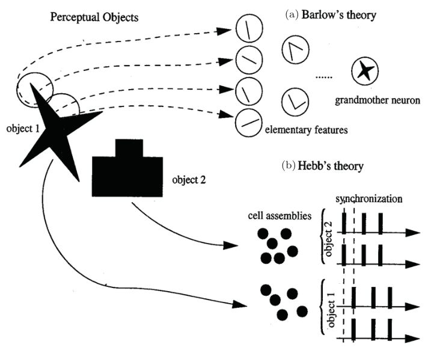
(a)
(b)
Hình 1. Bài toán ràng buộc trong lý thuyết của Barlow về nơ-ron bà nội (a) và lý thuyết của Hebb về các tập hợp tế bào (b) (Mainzer và Chua, 2013, tr. 198).
Hệ thống Phân cấp của các Tập hợp Tế bào Tương tác
Bằng cách này, chúng ta có được một hệ thống phân cấp gồm các cấp độ nhận thức đang nổi lên, bắt đầu từ động lực học vi mô của các nơ-ron đang phát xung. Động lực học của mỗi cấp độ được giả định là đặc trưng bởi các phương trình vi phân với các tham số trật tự. Ví dụ, ở cấp độ đầu tiên của động lực học vĩ mô, các tham số trật tự đặc trưng cho một tri giác thị giác. Ở cấp độ tiếp theo, người quan sát trở nên có ý thức về tri giác đó. Sau đó, tập hợp tế bào của tri giác được kết nối với vùng thần kinh chịu trách nhiệm cho các trạng thái ý thức. Ở bước tiếp theo, một tri giác có ý thức có thể là mục tiêu của các hoạt động lập kế hoạch. Trong trường hợp này, các tập hợp tế bào của các tập hợp tế bào được kết nối với các vùng thần kinh
272 Trí tuệ Nhân tạo của Hệ thống Phỏng thần kinh trong vỏ não lập kế hoạch, v.v. Chúng được biểu diễn bằng các phương trình phi tuyến ghép cặp với tốc độ phát xung của các tập hợp tế bào tương ứng. Ngay cả các khái niệm cấp cao như tự ý thức cũng có thể được giải thích bằng các sự tự phản ánh của các sự tự phản ánh, được kết nối với một trí nhớ cá nhân, vốn được biểu diễn trong các tập hợp tế bào tương ứng của não bộ. Các trạng thái não bộ nổi lên, tồn tại trong một khoảng thời gian ngắn, rồi biến mất và được thay thế bằng các trạng thái khác. Chính tính linh hoạt và sáng tạo của quá trình này làm cho não bộ ở động vật trở nên rất thành công trong việc thích nghi với các môi trường thay đổi nhanh chóng và khó lường.
Xét về mặt toán học, các tương tác của n tập hợp được mô tả bởi một hệ n phương trình vi phân ghép cặp phụ thuộc vào tốc độ phát xung chung cụ thể của chúng Fj(j = 1, 2, . . . , n) với dF1 dt = +F1(1 −F1) −αF2 −αF3 −· · · −αFn, dF2 dt = −αF1 + F2(1 −F2) −αF3 −· · · −αFn,
... dFn dt = −αF1 −αF2 −αF3 −· · · + Fn(1 −Fn), trong đó α là một tham số dương cho các tương tác ức chế giữa các tập hợp (Scott, 2003).
Các tập hợp tế bào hành xử tương tự như các nơ-ron đơn lẻ. Do đó, một tập hợp các nơ-ron kết nối ngẫu nhiên với nhau có một mức ngưỡng phát xung để khởi phát hoạt động toàn cục. Nếu mức này không đạt được, tập hợp sẽ không kích hoạt, rơi trở lại trạng thái tĩnh lặng. Nếu vượt quá mức ngưỡng, hoạt động phát xung của một tập hợp sẽ tăng nhanh lên mức tối đa. Hai điều kiện này đảm bảo rằng các tập hợp nơ-ron có thể tạo thành các tập hợp của các tập hợp. Các tập hợp nổi lên từ các tương tác phi tuyến của các nơ-ron đơn lẻ, trong khi các tập hợp của các tập hợp nổi lên từ sự tương tác phi tuyến của các tập hợp. Lặp lại nhiều lần, ta có được mô hình não bộ như một hệ thống phân cấp động đang nổi lên.
Cơ sở Thần kinh sinh học và Nhận thức của Hệ thống Phỏng thần kinh 273
Nguyên lý Hoạt động Cục bộ và Hình ảnh Chuyển đổi
Các tri giác chủ quan tương quan với các tập hợp tế bào phát xung đồng thời. Một hiện tượng tâm lý nổi tiếng là sự chuyển đổi tự phát giữa hai góc nhìn thay thế của một hình vẽ tùy thuộc vào các nhận thức ngẫu nhiên về các chi tiết cục bộ. Vào đầu thế kỷ 20, cái gọi là tâm lý học Gestalt tin rằng tri giác về toàn bộ hình dạng (tiếng Đức “Gestalt”) của một hình vẽ không thể được giải thích “một cách máy móc” bằng tổng các bộ phận của nó vì cái toàn thể lớn hơn các bộ phận của nó. Do đó, sự xuất hiện tự phát của một hình dạng và đặc biệt là sự chuyển đổi tự phát giữa hai hình dạng dường như là một hiện tượng tinh thần không thể giải thích bằng các phương pháp của khoa học tự nhiên toán học. Trên thực tế, trong khuôn khổ động lực học phi tuyến, các hình ảnh chuyển đổi có thể được mô hình hóa về mặt toán học bằng các chuyển pha thay thế tùy thuộc vào những thăng giáng ngẫu nhiên nhỏ bé và sự phá vỡ đối xứng trong các trạng thái siêu bền.
Một ví dụ là cái gọi là khối lập phương Necker (Hình 2) với hai góc nhìn khả dĩ được xác định bởi hai cách diễn giải khác nhau về các góc và cạnh. Các cạnh hoặc góc có thể được nhìn thấy luân phiên ở tiền cảnh hoặc hậu cảnh, bên trái hoặc bên phải, cao hoặc thấp. Sự kết hợp của chúng xác định hai hình ảnh khả dĩ. Người quan sát đang chuyển đổi qua lại giữa hai khả năng theo một kiểu dao động.
Các hoạt động thần kinh tương quan với hai tri giác về khối lập phương Necker được biểu diễn một cách hình thức bằng hai tham số ξ1 và ξ2. Ở trạng thái không ổn định, người quan sát chuyển đổi qua lại giữa ξ1 và ξ2 với các thăng giáng ngẫu nhiên. Một quyết định hoặc sự phá vỡ đối xứng của
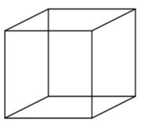
Hình 2. Khối lập phương Necker (Mainzer và Chua, 2013, tr. 199).
274 Trí tuệ Nhân tạo của Hệ thống Phỏng thần kinh trạng thái siêu bền được gây ra bởi các chi tiết nhỏ bé được quan sát (ví dụ: một góc được diễn giải ở hậu cảnh hoặc tiền cảnh) bắt đầu chi phối toàn bộ tri giác theo hình ảnh khả dĩ này hoặc hình ảnh khả dĩ kia. Động lực học phụ thuộc thời gian của quá trình này được mô hình hóa bằng hai phương trình vi phân đối xứng:
dξ1 dt = ξ1(1 −Cξ2
1 −(B + C)ξ2 2), dξ2 dt = ξ2(1 −Cξ2
2 −(B + C)ξ2 1).
Trong hiệp đồng học (synergetics) của Haken, ξ1 và ξ2 là các tham số trật tự vĩ mô chi phối các trạng thái thần kinh vi mô vốn tương quan với hai tri giác về khối lập phương Necker (Haken, 1996). Theo nghĩa của nguyên lý hoạt động cục bộ, hoạt động cục bộ của một đơn vị thần kinh tương quan với một chi tiết được tri giác của khối lập phương Necker kích hoạt hai tập hợp tế bào phát xung tương quan với hai tri giác khả dĩ về toàn bộ khối lập phương. Do đó, chúng ta cũng xem xét các tham số chú ý λ1 và λ2 giảm xuống khi các tham số tri giác tương ứng ξ1 và ξ2 tăng lên. Sự bão hòa của các tham số chú ý được xác định bởi các phương trình sau:
dλ1 dt = γ(1 −λ1 −ξ2
1), dλ2 dt = γ(1 −λ2 −ξ2
2).
Một nghiệm của các phương trình ghép cặp này được thể hiện trong Hình 3 (Haken, 1996, tr. 250), minh họa các dao động tri giác quan sát được.
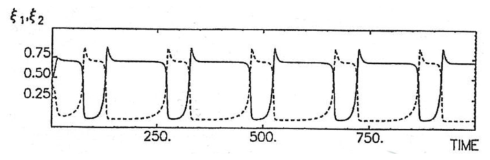
Hình 3. Đồ thị của các tham số trật tự ξ1 và ξ2 tương ứng với hai cách diễn giải khả dĩ của khối lập phương Necker theo thời gian (Mainzer và Chua, 2013, tr. 201).
Cơ sở Thần kinh sinh học và Nhận thức của Hệ thống Phỏng thần kinh 275
Nguyên lý Hoạt động Cục bộ, Trí tuệ và Ngữ nghĩa
Rõ ràng, động lực học tri giác của khối lập phương Necker tương tự như sơ đồ chung của các tập hợp tế bào ghép cặp. Sơ đồ hình thức của động lực học não bộ đưa ra một giả thuyết nghiên cứu để giải thích và hiểu các trạng thái tinh thần phức tạp. Nhìn chung, người ta giả định rằng mọi trạng thái tinh thần đều tương quan với các tập hợp tế bào tương ứng. Nhưng chúng không chỉ là tập hợp các nơ-ron đang phát xung mà còn là các hệ thống phân cấp gồm các hệ thống con thần kinh của các hệ thống con với độ sâu và mức độ phức tạp khác nhau. Giả thuyết nghiên cứu có nghĩa là các tập hợp tế bào tương ứng phải được xác định bằng thực nghiệm thông qua các thiết bị quan sát và đo lường. Chẳng hạn, trong việc đọc não, các tập hợp tế bào đang hoạt động tương quan với các từ và các đối tượng tương ứng có thể được xác định. Một nơ-ron đơn lẻ không mang tính quyết định và có thể khác nhau giữa những người khác nhau. Có những mẫu phân bố điển hình với hình dạng mờ, được biểu diễn trong các mô phỏng máy tính. Nghiên cứu não bộ vẫn còn cách rất xa việc quan sát hoạt động của từng nơ-ron trong não. Tuy nhiên, sơ đồ phân cấp hình thức của động lực học cho phép giải thích các trạng thái tinh thần phức tạp như ý thức chẳng hạn. Các trạng thái có ý thức có nghĩa là con người nhận thức được các hoạt động của mình. Tự nhận thức được thực hiện nhờ các vùng não bổ sung giám sát các tương quan thần kinh của những hoạt động này của con người (ví dụ: tri giác, cảm giác hoặc suy nghĩ). Do đó, ngay cả ý thức cũng không phải là sự kiện bí ẩn nào, mà có thể quan sát, đo lường và giải thích được trong khuôn khổ nghiên cứu này. Ở bước tiếp theo, một mô hình phân cấp hình thức mang lại cơ hội chế tạo các mạch và thiết bị kỹ thuật tương ứng cho não bộ kỹ thuật và robot có những khả năng này.
Các thuật ngữ truyền thống như “trí tuệ”, “tâm trí” và “ý thức” về mặt lịch sử mang quá nhiều nghĩa tùy thuộc vào các quan điểm, kinh nghiệm và lập trường lịch sử khác nhau. Do đó, nó phụ thuộc vào các định nghĩa của chúng ta. Về trí tuệ, một định nghĩa làm việc đơn giản được đề xuất mà không phụ thuộc vào “trí tuệ con người” (theo nghĩa phép thử AI của Turing). Một hệ thống được gọi là “thông minh” tùy thuộc vào khả năng giải quyết vấn đề của nó. Theo nghĩa đó, một con ve có một mức độ thông minh nhất định vì nó có thể giải quyết vấn đề tìm máu. Nhưng các hệ thống kỹ thuật đơn giản
276 Trí tuệ Nhân tạo của Hệ thống Phỏng thần kinh (ví dụ: một con chip) cũng có thể có những mức độ “thông minh” nhất định vì chúng có thể giải quyết một số vấn đề nhất định. Do đó, về mặt triết học, lập trường này đồng cảm với chủ nghĩa đa nguyên của Leibniz, người đã phân biệt các mức độ thông minh trong tự nhiên, trái ngược với nhị nguyên luận của Descartes, người tin vào một “thực thể” gọi là “tâm trí thông minh” vốn chỉ dành riêng cho con người. Theo nghĩa đó, đã có rất nhiều chức năng thông minh của, chẳng hạn như, robot.
Rõ ràng, các mẫu của tập hợp tế bào trong não không đồng nhất với tri giác, cảm giác và suy nghĩ của chúng ta. Nhưng trong nghiên cứu não bộ hiện đại, người ta đã xác nhận rõ ràng rằng các mẫu thần kinh của các tế bào phát xung tương quan với các trạng thái tinh thần. “Các trạng thái tinh thần” có thể được định nghĩa và mô hình hóa trong các không gian trạng thái và tham số với các hệ động lực liên kết cho phép chúng ta kiểm chứng các mô hình của mình. Với công nghệ đọc não, việc phân tích các tập hợp tế bào thậm chí cho phép chúng ta nhận ra ý nghĩa được biểu diễn của chúng (ví dụ: hình ảnh, từ ngữ, cụm từ): Tất nhiên, đây mới chỉ là những bước nghiên cứu đầu tiên, nhưng về nguyên tắc điều đó dường như là khả thi. Về khoa học máy tính, ngữ nghĩa được hiện thực hóa về mặt kỹ thuật trong những bước đầu tiên và ở những mức độ nhất định theo một nghĩa hạn chế và được định nghĩa rõ ràng.
Các khả năng vận động, nhận thức và tinh thần được lưu trữ trong các kết nối khớp thần kinh của các tập hợp tế bào. Một lõi cứng của mạng lưới khớp thần kinh đã được nối dây sẵn khi não động vật có vú được sinh ra. Nhưng nhiều kết nối khớp thần kinh được tạo ra trong các giai đoạn phát triển, trải nghiệm và học tập của động vật có vú. Trạng thái phát xung của các nơ-ron với các điện thế hoạt động lặp đi lặp lại củng cố các kết nối khớp thần kinh. Do đó, trong một giai đoạn học tập, một tập hợp tế bào gồm các nơ-ron phát xung đồng thời tạo ra một mạng lưới khớp thần kinh lưu trữ thông tin đã học. Các giai đoạn học tập có thể được mô hình hóa về mặt kỹ thuật bằng các thuật toán học tập (Mainzer, 2007). Như chúng ta đều biết, thông tin đã học có thể bị quên khi việc học không được lặp lại và các kết nối khớp thần kinh suy giảm. Do đó, ở cấp độ vi mô, động lực học não bộ được quyết định bởi hàng tỷ nơ-ron phát xung và không phát xung, và ở cấp độ vĩ mô bởi các tập hợp tế bào đang nổi lên và thay đổi của các mạng nơ-ron mã hóa các thông tin thần kinh khác nhau.
Cơ sở Thần kinh sinh học và Nhận thức của Hệ thống Phỏng thần kinh 277
Hiệu quả của mạng nơ-ron phụ thuộc vào số lượng các lớp phân cấp của chúng. Chúng cho phép não bộ kết nối các trạng thái thần kinh khác nhau của, ví dụ, thông tin thị giác, xúc giác và thính giác. Nhưng cũng có những lớp giám sát các quy trình tri giác và tạo ra ý thức thị giác: Một người nhận thức được và biết rằng mình đang tri giác một thứ gì đó. Như đã đề cập trong các chương trước, ngay cả cảm xúc của chúng ta cũng phụ thuộc vào các mạng nơ-ron chuyên biệt được kết nối với mọi loại hoạt động của não. Đó là một thách thức đối với nghiên cứu não bộ trong việc xác định các lớp và mạng lưới liên quan của não bộ trong suốt mọi loại hoạt động tinh thần và nhận thức.
Ngay cả sự hiểu biết ngữ nghĩa cũng trở nên khả thi nhờ các lớp phân cấp và các quy trình học tập của động lực học não bộ. Trong ngữ nghĩa học hình thức, một ngôn ngữ hình thức có được ý nghĩa của nó bằng cách ánh xạ các biểu thức hình thức của nó lên các biểu thức của một ngôn ngữ hình thức khác. Trong khoa học máy tính, nhiều lớp ngôn ngữ ký hiệu cũng được sử dụng để tạo ra ý nghĩa ngữ nghĩa và các quy trình kỹ thuật số. Ngôn ngữ tự nhiên của người dùng tham chiếu đến một ngôn ngữ máy tính bậc cao. Ở bước tiếp theo, một loại ngôn ngữ hành vi mô tả các chức năng dự kiến sẽ được thực thi trong hệ thống. Chúng liên hệ các đối số của mình một cách điển hình như các hàm toán học. Sau đó, cần có một mô tả kiến trúc, mô tả các tài nguyên sẵn có, sự giao tiếp và sự điều khiển. Mối liên hệ giữa mô tả hành vi và kiến trúc được thực hiện bằng cách gắn kết các chức năng sơ cấp với tài nguyên và lập lịch cho chúng theo thời gian (một tác vụ có thể được thực hiện bởi trình biên dịch hoặc trình hợp dịch). Cuối cùng, kiến trúc được hiện thực hóa bởi một lớp chuyển thanh ghi vốn gần với các mạch kỹ thuật số mà đến lượt chúng được hiện thực hóa bởi các linh kiện điện, điện áp và dòng điện. Mỗi lớp như vậy có ngôn ngữ mô tả, động lực học và các quy tắc cú pháp riêng. Ngữ nghĩa được cung cấp bởi sự tương tác giữa các lớp. Mạch kỹ thuật số cung cấp ngữ nghĩa cho mạch điện (ngược lại, lớp mạch cung cấp thông tin định thời cho mạch kỹ thuật số), lớp chuyển thanh ghi cho lớp kỹ thuật số, kiến trúc cho lớp chuyển thanh ghi, và mô tả hành vi nằm trên đỉnh của tất cả những lớp đó, ít nhất năm lớp trừu tượng ngữ nghĩa, mỗi lớp được diễn đạt bằng một cú pháp hình thức chuyên biệt.
278 Trí tuệ Nhân tạo của Hệ thống Phỏng thần kinh Chỉ vì các kỹ sư có thể tạo ra một hệ thống phân loại và trừu tượng hóa mạnh mẽ như vậy cho các lớp ngữ nghĩa nên một hệ thống kỹ thuật số mới có thể hiểu được đối với người dùng là con người và cỗ máy kỹ thuật số. Do đó, sự giao tiếp giữa con người và máy móc được hiện thực hóa trong một quá trình truyền tải trung gian giữa các lớp.
Não bộ con người có một kiến trúc phức tạp hơn nhiều, mà cho đến ngày nay, vẫn chưa thể tái tạo hoàn toàn thành các lớp phân biệt rõ ràng. Rõ ràng, não bộ không phải là thiết kế của một kiến trúc sư hay một kỹ sư với các mục đích kỹ thuật cụ thể, mà là kết quả của một quá trình tiến hóa ít nhiều ngẫu nhiên và mù quáng trong hàng triệu năm. Do đó, nhiều chức năng của các mô và mạng lưới vẫn chưa được biết đến, mặc dù các lớp tô-pô có thể được xác định và sử dụng để giải thích các quá trình ngữ nghĩa. Cuối cùng, não bộ cần được quét và mô hình hóa toàn bộ từ từng nơ-ron, khớp thần kinh và điện thế hoạt động đơn lẻ đến các tập hợp tế bào, mạng lưới và các lớp để mô hình hóa toàn bộ động lực học ở cấp độ vi mô và vĩ mô. “Cấp độ máy” đã được biết rõ và mô tả bởi hành vi kỹ thuật số của các nơ-ron phát xung và không phát xung với các điện thế hoạt động đang nổi lên. Các miền rìa hỗn loạn (edge-of-chaos) có thể được xác định rõ ràng trong các không gian tham số của các phương trình Hodgkin–Huxley. Chúng là nguồn gốc của mọi loại động lực học não bộ với các điểm hút của các trạng thái thần kinh tương quan với các hoạt động nhận thức và thông minh của con người.
So với não người, các hệ thống kỹ thuật có thể bị hạn chế, nhưng đôi khi chúng hiệu quả hơn nhiều với các giải pháp cụ thể cho các nhiệm vụ nhận thức và thông minh. Trong khoa học máy tính, web ngữ nghĩa và iPhone đã có thể hiểu câu hỏi ở một mức độ nào đó và thậm chí trả lời bằng ngôn ngữ tự nhiên. Công nghệ của các thuật toán (phân tích giọng nói) được áp dụng có thể khác với các quy trình sinh học được phát triển trong quá trình tiến hóa. Nhưng chúng giải quyết vấn đề ở một mức độ nhất định với sức mạnh máy tính, tốc độ cao, tính song song và khả năng lưu trữ, vốn có thể được cải thiện trong tương lai. Con người là những hệ thống phức tạp lai với các khả năng bổ sung (ví dụ: trí tưởng tượng, cảm xúc) luôn tham gia vào hành động ngữ nghĩa của chúng ta. Nhưng không thể loại trừ khả năng những khả năng này cũng có thể được xử lý trong một công nghệ tương lai.
Cơ sở Thần kinh sinh học và Nhận thức của Hệ thống Phỏng thần kinh 279
Từ Tính toán Hướng não đến Mạng Nơ-ron Tế bào
Một cách tiếp cận mạng nơ-ron hướng não là khái niệm mạng nơ-ron tế bào (CNN) (Chua, 1998). Ý tưởng chính đằng sau mô hình CNN là nguyên lý hoạt động cục bộ, khẳng định rằng không có hiện tượng phức tạp nào có thể phát sinh trong bất kỳ môi trường đồng nhất nào mà không có hoạt động cục bộ. Rõ ràng, hoạt động cục bộ là một thuộc tính cơ bản trong vi điện tử, nơi mà chẳng hạn, các đèn chân không và sau này là các bóng bán dẫn (transistor) đã là những thiết bị hoạt động cục bộ trong các mạch điện tử của radio, tivi và máy tính. Nhu cầu về hoạt động cục bộ trong mạng nơ-ron được thúc đẩy bởi những lý do thực tế của công nghệ. Năm 1985, John Hopfield về mặt lý thuyết đã đề xuất một mạng nơ-ron mà về nguyên tắc có thể thực hiện nhận dạng mẫu. Nhưng kiến trúc kết nối toàn cục của nó lại cực kỳ phi thực tế đối với các hiện thực hóa kỹ thuật trong các mạch tích hợp quy mô rất lớn (VLSI) của vi điện tử: Số lượng dây dẫn trong một mạng Hopfield kết nối đầy đủ tăng theo cấp số nhân với kích thước của mảng. Một CNN chỉ cần các kết nối điện trong một phạm vi ảnh hưởng được quy định trước.
Nhìn chung, CNN là một mạch tương tự phi tuyến xử lý tín hiệu theo thời gian thực. Nó là một hệ thống đa thành phần gồm các đơn vị giống hệt nhau (“nhân bản”) được bố trí đều đặn, gọi là các tế bào, chỉ giao tiếp trực tiếp với nhau thông qua các láng giềng gần nhất của chúng. Nhưng tính cục bộ của các kết nối trực tiếp cũng cho phép chúng ta thu được quá trình xử lý thông tin toàn cục. Giao tiếp giữa các đơn vị không kết nối trực tiếp (ở xa) đạt được bằng cách truyền qua các đơn vị khác. Ý tưởng rằng các hiện tượng phức tạp và toàn cục có thể nổi lên từ các hoạt động cục bộ trong một mạng lưới bắt nguồn từ mô hình ô tô-mát tế bào (CA). Theo nghĩa này, mô hình CNN là một bước phát triển cao hơn của mô hình CA dưới các điều kiện mới của xử lý thông tin và công nghệ chip. Không giống như CA thông thường, các bộ xử lý chủ CNN tiếp nhận và tạo ra các tín hiệu tương tự trong thời gian liên tục với các số thực làm giá trị tương tác. Nhưng trên thực tế, tính rời rạc của CA không khác biệt về mặt chất so với CNN liên tục. Chúng ta có thể đưa ra ô tô-mát tế bào liên tục (CCA) như một sự tổng quát hóa của CA, trong đó mỗi tế bào không chỉ là,
280 Trí tuệ Nhân tạo của Hệ thống Phỏng thần kinh ví dụ, đen hoặc trắng, mà thay vào đó có thể có bất kỳ mức độ nào trong một dải liên tục các mức xám khả dĩ. Một quy tắc khả dĩ của CCA có thể đòi hỏi, ví dụ, mức xám mới của mỗi tế bào bằng trung bình cộng mức xám của chính nó và của các láng giềng ngay sát nó. Hóa ra trong CCA, các quy tắc tương tác đơn giản có thể tạo ra các mẫu có độ phức tạp, hỗn loạn và ngẫu nhiên tăng dần, vốn về cơ bản không khác với hành vi của một CA rời rạc. Do đó, chúng hữu ích để xấp xỉ động lực học của các hệ thống được xác định bởi các phương trình vi phân riêng phần (PDE).
Đối với mô hình CNN, ngôn ngữ thần kinh sinh học mang lại những minh họa ẩn dụ cho các khái niệm tuy nhiên vẫn được định nghĩa về mặt toán học và triển khai về mặt kỹ thuật. Theo các mô hình thống trị của khoa học sự sống ngày nay, ngôn ngữ sinh học làm trung gian cho những tầm nhìn về các kết nối tương lai giữa công nghệ sinh học và công nghệ máy tính.
Định nghĩa về CNN
Một CNN được định nghĩa bởi (1) một tập hợp rời rạc về mặt không gian gồm các hệ động lực phi tuyến liên tục (“tế bào” hoặc “nơ-ron”) nơi thông tin được xử lý vào mỗi tế bào thông qua ba biến độc lập (“một đầu vào”, “một ngưỡng” và “một trạng thái ban đầu”) và (2) một quy luật ghép cặp liên hệ các biến liên quan của mỗi tế bào với tất cả các tế bào láng giềng trong một phạm vi ảnh hưởng được mô tả trước (Chua, 1998; Mainzer, 2007). Một kiến trúc CNN tiêu chuẩn bao gồm một mảng hình chữ nhật M × N các tế bào C(i, j) với tọa độ Descartes (i, j) với i = 1, 2, . . . , M và j = 1, 2, . . . , N (Hình 4(a)). Hình 4(b) và (c) cho thấy các ví dụ về phạm vi ảnh hưởng tế bào dưới dạng các vùng lân cận 3 × 3 và 5 × 5. Động lực học trạng thái của một tế bào được định nghĩa bởi một phương trình vi phân phi tuyến (phương trình trạng thái CNN) với các đại lượng vô hướng cho một trạng thái xij, một đầu ra yij, một đầu vào uij, một ngưỡng zij, và các hệ số, gọi là “trọng số khớp thần kinh”, mô hình hóa cường độ kết nối khớp thần kinh của tế bào C(i, j) với các đầu vào (tín hiệu truyền thẳng) và đầu ra (tín hiệu phản hồi) của tế bào láng giềng C(k, l). Phương trình đầu ra CNN kết nối các trạng thái của một tế bào với các đầu ra.
Cơ sở Thần kinh sinh học và Nhận thức của Hệ thống Phỏng thần kinh 281
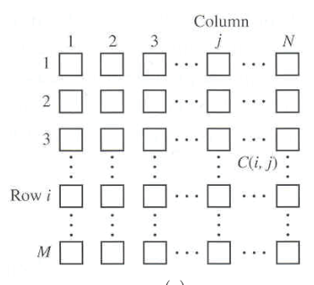
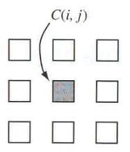
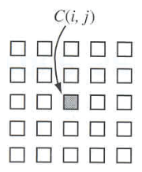
(a) (b) (c)
Hình 4. Một CNN tiêu chuẩn với một mảng (a), vùng lân cận 3×3 và 5×5 (b và c) (Mainzer và Chua, 2013, tr. 270).
Phần lớn các ứng dụng CNN sử dụng các CNN tiêu chuẩn bất biến không gian với vùng lân cận tế bào 3 × 3 và không có sự thay đổi của các trọng số khớp thần kinh cũng như ngưỡng tế bào trong không gian tế bào. Một phạm vi ảnh hưởng 3 × 3 tại mỗi nút của lưới chứa chín tế bào với tám tế bào láng giềng và tế bào ở tâm của nó. Trong trường hợp này, đóng góp của các trọng số đầu ra (phản hồi) và đầu vào (truyền thẳng) có thể được rút gọn thành hai ma trận 3 × 3 cố định được gọi là mẫu nhân bản phản hồi (đầu ra) A và mẫu nhân bản truyền thẳng (đầu vào) B. Do đó, mỗi CNN được xác định duy nhất bởi hai mẫu nhân bản A và B, cùng một ngưỡng z, bao gồm 3 × 3 + 3 × 3 + 1 = 19 số thực. Chúng có thể được sắp xếp thành một chuỗi gồm 19 đại lượng vô hướng với một ngưỡng đồng nhất, chín trọng số khớp thần kinh truyền thẳng và chín trọng số khớp thần kinh phản hồi. Chuỗi này được gọi là một gen CNN vì nó xác định hoàn toàn động lực học của một CNN. Theo đó, vũ trụ của tất cả các gen CNN được gọi là bộ gen CNN. Tương tự như dự án bộ gen người, có thể đạt được tiến bộ ổn định bằng cách cô lập và phân tích các lớp gen CNN khác nhau và ảnh hưởng của chúng lên các bộ gen CNN.
Một chương trình CNN được định nghĩa bởi một chuỗi các gen CNN được gọi là một nhiễm sắc thể CNN. Mọi CA với các trạng thái nhị phân đều có thể được coi là một nhiễm sắc thể CNN. Đặc biệt, CA Trò chơi Cuộc đời (Game of Life) của Conway có thể được hiện thực hóa bằng một nhiễm sắc thể CNN. Vì CA Trò chơi Cuộc đời là một
282 Trí tuệ Nhân tạo của Hệ thống Phỏng thần kinh máy Turing phổ quát, nên CNN Trò chơi Cuộc đời tương ứng cũng là một máy Turing phổ quát. Do đó, tồn tại một máy phổ quát CNN (CNN-UM) có thể mô phỏng bất kỳ CNN cụ thể nào.
CNN và Tính toán Thị giác
Về tính toán thị giác, bộ ba {A, B, z} và 19 số thực của nó có thể được coi là một lệnh vĩ mô CNN về cách biến đổi một hình ảnh đầu vào thành một hình ảnh đầu ra. Các ví dụ đơn giản bao gồm các lớp con của CNN có tính ứng dụng thực tế như lớp C(A, B, z) của các CNN bất biến không gian với các trọng số khớp thần kinh kích thích và ức chế, lớp không phản hồi (truyền thẳng) C(0, B, z) của các CNN không có phản hồi tế bào, lớp không đầu vào (tự trị) C(A, 0, z) của các CNN không có đầu vào tế bào, và lớp không ghép cặp C(A0, B, z) của các CNN không có sự ghép cặp tế bào. Trong A0, tất cả các trọng số đều bằng không ngoại trừ trọng số của tế bào ở tâm ma trận. Luồng tín hiệu và cấu trúc hệ thống của chúng có thể được minh họa bằng các sơ đồ, dễ dàng áp dụng cho cả mạch điện tử cũng như các nơ-ron sống điển hình.
Các CNN là những ứng cử viên tối ưu để mô phỏng các tương tác thần kinh cục bộ của các tế bào tạo ra các hiện tượng vĩ mô tập thể. Một CNN tự trị đơn giản có thể được thiết kế bằng cách sử dụng một mẫu có kích hoạt cục bộ và ức chế bên. Nó tự phát tạo ra một mẫu mê cung từ các điều kiện ban đầu ngẫu nhiên. Ở bước tiếp theo, ánh xạ võng mạc–vỏ não được áp dụng cho mẫu ổn định thu được. Về mặt hình học, một điểm tọa độ cực trên võng mạc được ánh xạ từ điểm Descartes trên vỏ não, tạo ra thị giác tri giác về một mẫu đường hầm xoắn ốc (Hình 5). Ưu điểm của mô hình CNN rất rõ ràng: Nó có thể dễ dàng được lập trình vào một con chip CNN-UM, thứ có thể được cấy ghép vào não sống trong các ứng dụng phẫu thuật thần kinh tương lai.
CNN và Phỏng sinh học Thần kinh
Các CNN với khả năng xử lý thông tin tính bằng nano giây (trong thiết kế tiêu chuẩn) và thậm chí bằng tốc độ ánh sáng (trong công nghệ quang học) dường như là những ứng cử viên tối ưu cho các ứng dụng trong phỏng sinh học thần kinh. Rõ ràng,
Cơ sở Thần kinh sinh học và Nhận thức của Hệ thống Phỏng thần kinh 283
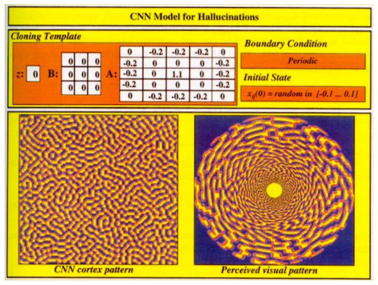
Hình 5. Một mô hình CNN cho ảo giác (Mainzer và Chua, 2013, tr. 272).
có những điểm tương đồng đáng ngạc nhiên giữa các kiến trúc CNN và, chẳng hạn, con đường thị giác của não bộ. Một cách tiếp cận CNN phù hợp được gọi là “Mắt Phỏng sinh học” (Chua và Rosca, 2002), nghĩa là một khuôn khổ hình thức của các mô hình thị giác được kết hợp và triển khai trên CNN-UM. Phân tích bắt đầu với một mô hình về tổ chức trường tiếp nhận trong võng mạc và con đường thị giác. Hình 6(a) cho thấy một nơ-ron với một đầu ra sợi trục phân nhánh tới nhiều nơ-ron khác và nhiều đầu vào sợi nhánh. Các khoảng trống nhỏ biểu thị các khớp thần kinh được mô hình hóa bởi các phần tử mẫu. Trong Hình 6(b), một nơ-ron ở tâm nhận các đầu ra hồi quy từ các láng giềng của nó. Do đó, trường tiếp nhận của một nơ-ron trung tâm được mô hình hóa bởi một mẫu A 3 × 3 tương ứng làm phạm vi ảnh hưởng cục bộ của nó. Trong Hình 6(c), một phần của mạng nơ-ron hai lớp được hiển thị với mỗi lớp là một biểu diễn một chiều của lưới hai chiều. Nơ-ron ở tâm của lớp 2 nhận các đầu vào sợi nhánh từ
284 Trí tuệ Nhân tạo của Hệ thống Phỏng thần kinh
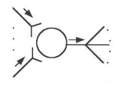
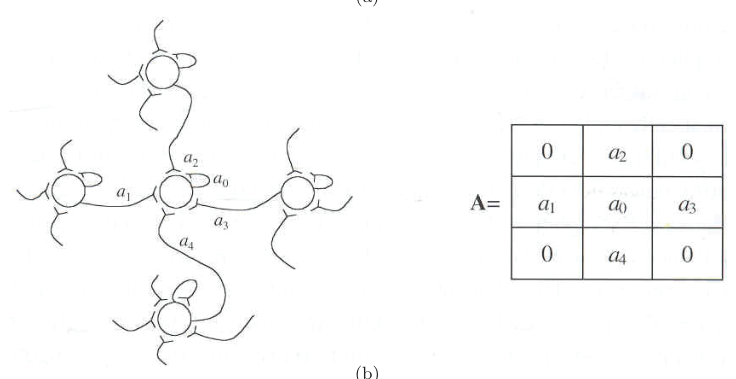
(a)
(b)
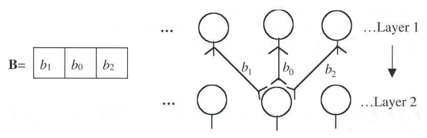
(c)
Hình 6. Mô hình CNN về phỏng sinh học thần kinh với nơ-ron (a), mẫu A (b) và mẫu B (c) (Mainzer và Chua, 2013, tr. 273).
vùng lân cận ở lớp đầu vào 1. Các trọng số tương ứng được mô hình hóa bởi một mẫu B.
Nhiều mô hình giải phẫu thần kinh và sinh lý học thần kinh có thể được chuyển dịch thành các mẫu nhân bản CNN. Chẳng hạn, sự điều chỉnh độ dài (length tuning) có nghĩa là một số nơ-ron nhất định trong nhân gối ngoài và vỏ não thị giác đưa ra phản ứng tối đa đối với một thanh được định hướng tối ưu
Cơ sở Thần kinh sinh học và Nhận thức của Hệ thống Phỏng thần kinh 285
có độ dài nhất định. Phản ứng giảm đi hoặc biến mất khi tăng độ dài của kích thích thanh. Một mô hình CNN tương ứng phát hiện các thanh ngang, dọc và chéo có độ dài không quá ba điểm ảnh. Một chức năng khác trong vỏ não thị giác là tính chọn lọc hướng, cũng có thể được hiện thực hóa bằng một CNN không ghép cặp. Các ảo ảnh thị giác như ảo ảnh đầu mũi tên vốn đã được nghiên cứu trong tâm lý học nhận thức cũng có thể được mô phỏng bằng một CNN không ghép cặp. Sau khi đưa ra các phần tử “Lego” của võng mạc như tế bào, khớp thần kinh và mẫu cho tổ chức trường tiếp nhận, một mô hình CNN đa lớp đơn giản hóa của võng mạc có thể được thiết kế và áp dụng trong phỏng sinh học thần kinh. Cuối cùng, kiến trúc CNN-UM cho phép chúng ta triển khai nhiều mô hình phỏng thần kinh không gian–thời gian. Cùng một kiến trúc của máy phổ quát không chỉ có thể được sử dụng để bắt chước các võng mạc khác nhau của động vật, ví dụ, của ếch, kỳ giông hổ, thỏ hoặc đại bàng, mà còn có thể được kết hợp và tối ưu hóa cho các ứng dụng kỹ thuật. Sự kết hợp giữa chip sinh học và chip nhân tạo không còn là giấc mơ khoa học viễn tưởng về người máy sinh học (cyborg), mà là hiện thực kỹ thuật với những triển vọng đầy cảm hứng cho robot và y học (Mainzer, 2010).
CNN và các Ứng dụng Y học
Trong động kinh học, các ứng dụng lâm sàng của chip CNN đã được dự kiến (Tetzlaff, 2002). Ý tưởng là phát triển một thiết bị chip thu nhỏ để dự đoán và ngăn ngừa các cơn động kinh. Các kỹ thuật phân tích chuỗi thời gian phi tuyến đã được phát triển để đặc trưng hóa các mẫu EEG điển hình của một cơn động kinh và nhận biết các chuyển pha dẫn đến trạng thái thần kinh động kinh. Các kỹ thuật này chủ yếu liên quan đến việc ước tính các tiêu chí nổi tiếng, chẳng hạn như chiều tương quan, entropy Kolmogorov–Sinai, số mũ Lyapunov, các thước đo tính tất định và tính tương đồng fractal. Các thiết bị dự đoán và ngăn ngừa cơn co giật cấy ghép đã được sử dụng cho bệnh nhân Parkinson. Trong trường hợp các quá trình động kinh, một thiết bị như vậy sẽ liên tục theo dõi các đặc trưng trích xuất từ EEG, tính toán xác suất của một cơn co giật sắp xảy ra và được trang bị các kỹ thuật phòng ngừa phù hợp.
286 Trí tuệ Nhân tạo của Hệ thống Phỏng thần kinh
Nó cũng cần sở hữu cả tính linh hoạt cao để điều chỉnh theo các mẫu của từng bệnh nhân và hiệu quả cao để cho phép ước tính các đặc trưng này theo thời gian thực. Hơn nữa, nó phải tiêu thụ năng lượng thấp và đủ nhỏ để được triển khai trong một hệ thống cấy ghép thu nhỏ. Những yêu cầu này được hiện thực hóa tối ưu bởi các CNN với sức mạnh tính toán song song khổng lồ, xử lý thông tin tương tự và khả năng tính toán phổ quát. Hình 7 cho thấy một thiết bị chip thu nhỏ để dự đoán và ngăn ngừa cơn co giật. Dữ liệu EEG được ghi lại từ các điện cực cấy gần hoặc bên trong vùng động kinh và được đưa vào hệ thống phân tích chuỗi thời gian. Hệ thống trích xuất các đặc trưng của một cơn co giật sắp xảy ra bằng hệ thống cảnh báo (Hình 7(a)) và hỗ trợ truyền thuốc tác dụng ngắn theo nhu cầu để ngăn chặn cơn co giật (Hình 7(b)).
Nhìn chung, các CNN là một lớp đặc biệt của mạng phi tuyến tế bào mô phỏng sự hình thành mẫu trong tự nhiên. Chúng sử dụng cùng chữ viết tắt CNN và ý nghĩa của nó tùy thuộc vào ngữ cảnh. Các CNN đặc biệt là CNN phản ứng–khuếch tán mô phỏng sự hình thành mẫu trong các hệ thống phản ứng–khuếch tán. Một CNN là bất kỳ sự sắp xếp không gian nào của các tế bào ghép cặp cục bộ, trong đó mỗi tế bào là một hệ động lực có đầu vào, đầu ra và trạng thái tiến hóa theo một số
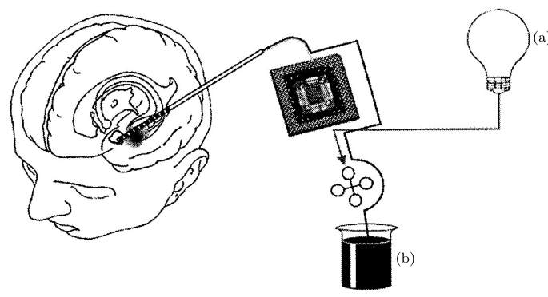
(a)
(b)
Hình 7. Chip CNN-UM để dự đoán và ngăn ngừa cơn động kinh (Mainzer và Chua, 2013, tr. 275).
Cơ sở Thần kinh sinh học và Nhận thức của Hệ thống Phỏng thần kinh 287
quy luật động lực học được quy định và động lực học của nó chỉ được ghép cặp giữa các tế bào láng giềng nằm trong một phạm vi ảnh hưởng được quy định lấy tâm tại vị trí của tế bào đó. Nói ngắn gọn, một CNN được định nghĩa bởi các phương trình trạng thái của các tế bào cô lập và các quy luật ghép cặp tế bào (bên cạnh các điều kiện biên và điều kiện ban đầu).
Nhắc lại về Hệ thống Phản ứng–Khuếch tán
Trong một hệ thống phản ứng–khuếch tán, mỗi tế bào nằm tại bất kỳ điểm lưới ba chiều nào với tọa độ không gian (x, y, z) được định nghĩa bởi một phương trình trạng thái
∂xi
∂t = fi(x1, x2, . . . , xn)(i = 1, 2, . . . , n), trong đó x = (x1, x2, . . . , xn)T là các biến trạng thái, và f(x) = (f1(x), f2(x), . . . , fn(x)) là một hàm vectơ phi tuyến của x gọi là số hạng động học.
Hơn nữa, mỗi tế bào được xác định bởi một quy luật ghép cặp tế bào “khuếch tán”
∂2xi
∂x2 + ∂2xi
∂y2 + ∂2xi
Ii = Di
,
∂z2 với các hệ số khuếch tán D1, D2, . . . , Dn, và toán tử Laplace
∂2xi
∂x2 + ∂2xi
∂y2 + ∂2xi
∂z2 . Nếu cộng quy luật ghép cặp tế bào vào phương trình trạng thái tế bào, chúng ta thu được PDE của một hệ thống phản ứng–khuếch tán với
∂2xi
∂x2 + ∂2xi
∂y2 + ∂2xi
∂xi
∂t = fi(x1, x2, . . . , xn) + Di
.
∂z2
Với định nghĩa về một CNN phản ứng–khuếch tán thay thế toán tử Laplace bằng phiên bản rời rạc hóa của nó,
∂2xi
∂x2 + ∂2xi
∂y2 + ∂2xi
∂z2 →(∇2xαβγ)i,
288 Trí tuệ Nhân tạo của Hệ thống Phỏng thần kinh trong đó (∇2xαβγ)I ≜xi(α + 1, β, γ) + xi(α −1, β, γ)
+ xi(α, β + 1, γ + xi(α, β −1, γ)
+ xi(α, β, γ + 1) + xi(α, β, γ −1)
−6xi(α, β, γ), i = 1, 2, . . . , Nx.
chúng ta thu được phương trình CNN phản ứng–khuếch tán liên kết sau đây
˙xi(α, β, γ) = fi(x1(α, β, γ), x2(α, β, γ), . . . , xn(α, β, γ))
+ Di∇2(xαβγ)i, với α = (1, 2, . . . , Nα), β = (1, 2, . . . , Nβ), và γ = (1, 2, . . . , Nγ), trong đó xi(α, β, γ) biểu thị biến trạng thái xi nằm tại một điểm trong không gian ba chiều với tọa độ không gian (α, β, γ). Do đó, hệ thống CNN phản ứng–khuếch tán được xác định bởi một hệ gồm n = NxNαNβNγ phương trình vi phân thường (Chua, 1999). Nếu toán tử Laplace rời rạc được thay thế bằng phiên bản liên tục giới hạn của nó, chúng ta thu được các PDE phản ứng–khuếch tán tiêu chuẩn. Theo các mô phỏng số mở rộng, các phương trình phản ứng–khuếch tán CNN và các PDE liên kết của chúng có hành vi định tính tương tự nhau. Điều thú vị cần lưu ý là điều ngược lại không đúng theo nghĩa một số hiện tượng như sự thất bại lan truyền quan sát được trong một phương trình phản ứng–khuếch tán rời rạc hóa sẽ không xảy ra và không thể quan sát được trong phương trình giới hạn vi phân riêng phần (PDE) của nó (Perez-Munuzuri et al., 1992). Nói cách khác, phương trình phản ứng–khuếch tán rời rạc hóa tổng quát hơn so với PDE liên kết của nó. Trong phần tiếp theo, một số ví dụ về PDE xác định các hệ thống phản ứng–khuếch tán của hóa học, sinh học và khoa học thần kinh được ánh xạ vào các CNN. Vì các CNN có thể được mô phỏng bằng máy tính, các ánh xạ toán học này chứng minh một cách chặt chẽ rằng sự hình thành mẫu trong các hệ thống phản ứng–khuếch tán tự nhiên có thể được mô phỏng bằng máy tính.
Cơ sở Thần kinh sinh học và Nhận thức của Hệ thống Phỏng thần kinh 289
Ví dụ Hóa học về một CNN Phản ứng–Khuếch tán
Một ví dụ hóa học về hệ thống phản ứng–khuếch tán là cái gọi là Brusselator của Prigogine (xem Chương 2.1), thứ có thể được mô phỏng bằng một CNN phản ứng–khuếch tán liên kết của máy tính. Brusselator được định nghĩa bởi hai PDE,
∂2u
∂x2 + ∂2u
∂u
∂t = a −(b + 1)u + u2v + D1 ,
∂y2
∂2u
∂x2 + ∂2u
∂v
∂t = bu −u2v + D2 ,
∂y2 của các chất hóa học u và v, tương ứng. Thay thế toán tử Laplace bằng phiên bản rời rạc hóa của nó, chúng ta thu được phương trình CNN phản ứng–khuếch tán liên kết sau đây (Brusselator CNN):
˙uij = a −(b + 1)uij + u2 ijvij
+ D1(ui+1,j + ui−1,j + ui,j+1 + ui,j−1 −4uij),
˙vij = buij −u2 ijvij + D2(vi+1,j + vi−1,j + vi,j+1 + vi,j−1 −4vij).
Ví dụ Thần kinh sinh học về một CNN Phản ứng–Khuếch tán
Các phương trình Hodgkin–Huxley là một mô hình toán học mô tả cách các điện thế hoạt động trong nơ-ron được khởi phát và lan truyền. Đó là một tập hợp các phương trình vi phân phi tuyến xấp xỉ các đặc tính điện của các nơ-ron có thể bị kích thích. Năm 1952, Alan Lloyd, Hodgkin và Huxley đã đưa ra mô hình để giải thích các cơ chế ion làm nền tảng cho sự khởi phát và lan truyền của các điện thế hoạt động. Họ đã nhận giải Nobel Sinh lý học hoặc Y học năm 1963 cho mô hình này. Các phương trình FitzHugh–Nagumo (1961) là một sự đơn giản hóa của mô hình Hodgkin–Huxley.
Mô hình FitzHugh–Nagumo về sự khởi phát và lan truyền của các điện thế hoạt động thần kinh giữa các nơ-ron có thể bị kích thích được định nghĩa
290 Trí tuệ Nhân tạo của Hệ thống Phỏng thần kinh bởi hai PDE:
u3
3 −u
∂2u ∂x2 ,
∂u
∂t = −
−v + D1
∂v
∂t = −ϵ(u −bv + a).
Thay thế toán tử Laplace bằng phiên bản rời rạc hóa của nó, chúng ta thu được phương trình CNN phản ứng–khuếch tán liên kết sau đây (FitzHugh–Nagumo CNN) mô phỏng xấp xỉ các điện thế hoạt động trên máy tính:
u3
i 3 −ui
˙ui = −
−vi + D1(ui+1 + ui−1 −2ui),
˙vi = −ϵ(ui −b vi + a).
Điều quan trọng cần lưu ý là các PDE chỉ đơn thuần là sự trừu tượng hóa toán học của tự nhiên. Khái niệm môi trường liên tục trên thực tế là một sự lý tưởng hóa của thực tại. Ngay cả tập hợp tất cả các electron trong một chất rắn cũng không tạo thành một môi trường liên tục vì phần lớn thể tích ngăn cách các electron với hạt nhân nguyên tử đại diện cho một không gian trống rộng lớn. Đặc biệt, cơ học lượng tử ngụ ý rằng ở những khoảng cách cực nhỏ, không gian được tạo thành từ các bit lượng tử rời rạc.
Trong trường hợp đặc biệt khi một CNN bao gồm một mảng đồng nhất, nơi các tế bào của nó không có đầu vào, không có ngưỡng và không có đầu ra, và nơi phạm vi ảnh hưởng chỉ mở rộng đến các láng giềng gần nhất, CNN sẽ rút gọn thành một mạng lưới phi tuyến. Hình 8 mô tả một CNN ba chiều được minh họa bằng một khối lập phương gồm các tế bào, được biểu diễn bằng các nút, trong đó một tế bào điển hình Cijk = C(i, j, k) được tô sáng cùng với phạm vi ảnh hưởng Sijk của nó.
Xét từ góc độ mạch điện tử, mỗi tế bào có thể được coi là một thiết bị ba cực, hoặc một mạng hai cửa nối đất (Chua, 1998, Phần III). Trong Hình 8, mỗi tế bào trong CNN ba chiều này được ghép cặp với sáu tế bào láng giềng gần nhất của nó thông qua các điện trở thụ động tuyến tính. Một tế bào trong trường hợp này là một bộ dao động Chua với ba cực ngoài hoặc hai cửa có chung điểm nối đất. Mỗi cực ngoài (ngoại trừ điểm nối đất) được nối với một tụ điện bên trong tế bào và được ghép cặp với một cực tương ứng của sáu tế bào láng giềng thông qua sáu điện trở thụ động tuyến tính.
Cơ sở Thần kinh sinh học và Nhận thức của Hệ thống Phỏng thần kinh 291
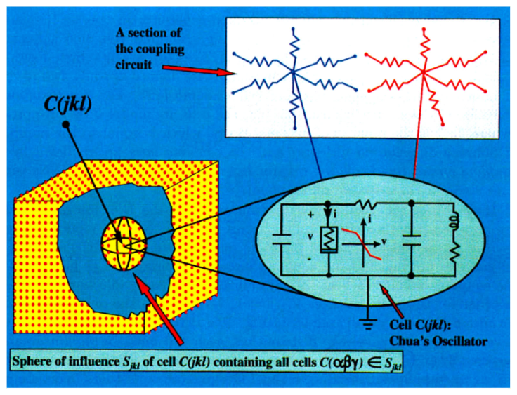
Hình 8. Một CNN ba chiều với hình cắt của một tế bào bên trong Cijk (bộ dao động Chua) và phạm vi ảnh hưởng Sijk của nó (Mainzer và Chua, 2013, tr. 279).
Trong một mặt cắt ngang hai chiều của khối lập phương CNN, mỗi một cửa của bộ dao động Chua được biểu diễn bằng một hộp đen hai cực ghép cặp với các láng giềng của nó bằng bốn điện trở thụ động tuyến tính, hai điện trở dọc theo mỗi trục tọa độ (Hình 9).
Nhìn chung, một CNN được định nghĩa duy nhất bởi các tế bào và các sự ghép cặp của chúng. Trong Hình 11, mỗi tế bào C(j, k) của một CNN phản ứng–khuếch tán được xác định là một mạng m-cửa phi tuyến được định nghĩa bởi động lực học tế bào của nó, trong đó m bằng số lượng các biến trạng thái được ghép cặp trực tiếp với các láng giềng của nó. Các biến trạng thái bổ sung không được ghép cặp trực tiếp với các láng giềng của nó được ẩn đi về mặt đồ họa. Các sự ghép cặp từ tế bào C(j, k) đến tất cả các tế bào trong phạm vi ảnh hưởng 3×3 Sjk được đặt tâm tại (j, k) và được xác định bởi một mạng γ-cửa Γjk.
Đối với CNN phản ứng–khuếch tán một khuếch tán trong Hình 9, một tế bào cô lập C(j, k) và bốn điện trở ghép cặp của nó được thể hiện trong Hình 11(a).
292 Trí tuệ Nhân tạo của Hệ thống Phỏng thần kinh
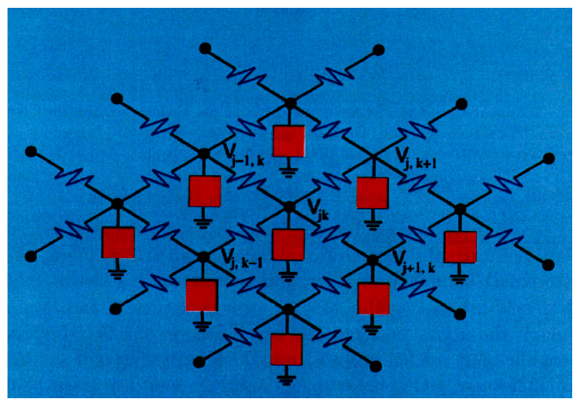
Hình 9. Một CNN hai chiều được tạo thành từ các tế bào bộ dao động Chua ghép cặp qua một lớp lưới điện trở tuyến tính đơn lẻ (Mainzer và Chua, 2013, tr. 280).
Mạch ghép cặp năm cực hoặc mạng γ-cửa Γjk (γ = 4) trong Hình 11(a) có thể được vẽ lại thành một mạng bốn cửa nối đất có chung điểm nối đất, như thể hiện trong Hình 11(b) (Chua, 1999). Đối với CNN phản ứng–khuếch tán trong Hình 10, mạng γ-cửa Γjk bao gồm m mạng bốn cửa nối đất giống hệt nhau với nút (j, k) là nút nối đất và được tạo thành từ bốn điện trở thụ động tuyến tính trực giao giống hệt nhau với tổng cộng γ = 4m. Một CNN được đặc tả hoàn toàn bởi tế bào m-cửa C(j, k) và sự ghép cặp γ-cửa Γjk.
Vì độ dẫn điện của tất cả các điện trở trong mỗi lớp i của lưới điện trở trong Hình 10 bằng hệ số khuếch tán Di vốn được giả định là dương, nên suy ra sự ghép cặp γ-cửa Γjk là thụ động. Nếu tế bào C(j, k) thụ động cục bộ một cách chặt chẽ, thì từ các xem xét về đối xứng suy ra CNN phải có một nghiệm trạng thái dừng duy nhất. Kết quả này ngụ ý rằng tất cả các nút thuộc cùng một lớp phải có điện áp nút-so-với-chuẩn giống hệt nhau. Suy ra không thể tồn tại mẫu hoặc cấu trúc tiêu tán nào.
Cơ sở Thần kinh sinh học và Nhận thức của Hệ thống Phỏng thần kinh 293
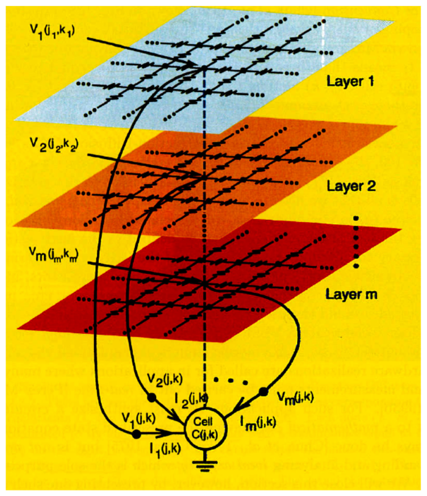
Hình 10. Một tế bào CNN C(j, k) như một mạng m-cửa phi tuyến ghép cặp với các láng giềng của nó. Chỉ số dưới i gắn với (ji, ki) biểu thị nút trong lớp lưới điện trở thứ i được nối với một cực của tế bào C(j, k). Tất cả các điện trở trong lớp i = 1, 2, . . . , m đều là các điện trở tuyến tính có độ dẫn điện giống hệt nhau (Mainzer và Chua, 2013, tr. 281).
CNN và Nguyên lý Hoạt động Cục bộ
Nhìn chung, sự ghép cặp γ-cửa Γjk phải được mô hình hóa như một mạng đa cửa động lực học phi tuyến. Trong trường hợp này, động lực học phải hướng tới một phân bố điện áp nút trạng thái dừng đồng nhất trên mỗi lưới điện trở
294 Trí tuệ Nhân tạo của Hệ thống Phỏng thần kinh
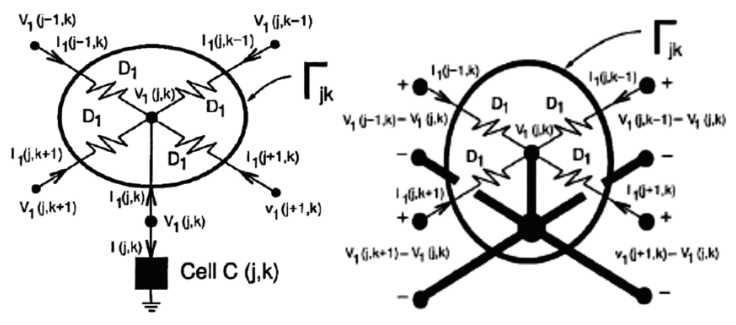
(a) (b)
Hình 11. Một tế bào cô lập C(j, k) của một lưới hai chiều (Hình 9) với bốn điện trở tuyến tính ghép cặp của nó có độ dẫn điện giống hệt nhau D1 (a). Mạch năm cực Γjk trong (a) tương đương với một mạng bốn cửa nơi các dây đậm tạo thành cực nối đất chung của mỗi cửa (b) (Mainzer và Chua, 2013, tr. 282).
nếu cả tế bào m-cửa C(j, k) và sự ghép cặp γ-cửa Γjk đều thụ động cục bộ một cách chặt chẽ. Do đó, nguyên lý hoạt động cục bộ một lần nữa được chứng minh:
Một CNN liên kết với một môi trường không bảo toàn đồng nhất không thể thể hiện các mẫu hoặc cấu trúc tiêu tán trừ khi các tế bào, hoặc các sự ghép cặp, hoạt động cục bộ.
Ở bước tiếp theo, chúng ta hãy áp dụng sơ đồ chung của nguyên lý hoạt động cục bộ cho các CNN điện. Mỗi tế bào C(j, k, l) trong một CNN phản ứng–khuếch tán có n biến trạng thái nhưng chỉ có m ≤ n trong số chúng được ghép cặp trực tiếp với các láng giềng gần nhất của nó thông qua khuếch tán. Trong trường hợp này, phương trình trạng thái của mỗi tế bào C(j, k, l) có dạng
˙V1(j, k, l) = f1(V1(j, k, l), V2(j, k, l), . . . , Vn(j, k, l))
+ D1∇2V1(j, k, l),
˙V2(j, k, l) = f2(V1(j, k, l), V2(j, k, l), . . . , Vn(j, k, l))
+ D2∇2V2(j, k, l),
...
˙Vm(j, k, l) = fm(V1(j, k, l), V2(j, k, l), . . . , Vn(j, k, l))
+ Dm∇2Vm(j, k, l),
Cơ sở Thần kinh sinh học và Nhận thức của Hệ thống Phỏng thần kinh 295
˙Vm+1(j, k, l) = fm+1(V1(j, k, l), V2(j, k, l), . . . , Vn(j, k, l)),
...
˙Vn(j, k, l) = fn(V1(j, k, l), V2(j, k, l), . . . , Vn(j, k, l)), với j = 1, 2, . . . , Nx; k = 1, 2, . . . , Ny; z = 1, 2, . . . , Nz.
Dưới dạng vectơ, các phương trình là
˙Va = fa(Va, Vb) + Da∇2Va,
˙Vb = fb(Va, Vb), trong đó Va = [V1(j, k, l), V2(j, k, l), . . . , Vn(j, k, l)]T ,
Vb = [Vm+1(j, k, l), Vm+2(j, k, l), . . . , Vn(j, k, l)]T , fa = [f1, f2, . . . , fm]T , fb = [fm+1, fm+2, . . . , fn]T ,
Da∇2 = [∇2V1(j, k, l), ∇2V2(j, k, l), . . . , ∇2Vm(j, k, l)]T ,
⎡
⎤
D1 . . .
⎢⎢⎢⎢⎣
⎥⎥⎥⎥⎦
D2 ... ... ...
Da =
với Di > 0.
· · · Dm
Rõ ràng, trong một CNN, chúng ta phải phân biệt động lực học của các tế bào và các sự ghép cặp của chúng.
Định nghĩa về CNN bằng Động lực học Tế bào và Quy luật Ghép cặp
Một CNN được định nghĩa bởi động lực học của các tế bào và các sự ghép cặp của chúng:
Động lực học tế bào: ˙Va = fa(Va, Vb) + Ia,
˙Vb = fb(Va, Vb).
Quy luật ghép cặp: Ia = ga(Va(j, k, l), Va(j −1, k, l), Va(j + 1, k, l),
Va(j, k −1, l), Va(j, k + 1, l), Va(j, k, l −1),
Va(j, k, l + 1))
296 Trí tuệ Nhân tạo của Hệ thống Phỏng thần kinh
⎡
⎤
⎡
⎤
∇2V1(j, k, l)
D1 . . .
⎢⎢⎢⎢⎣
⎥⎥⎥⎥⎦
⎢⎢⎢⎢⎣
⎥⎥⎥⎥⎦
∇2V2(j, k, l)
D2 ... ... ...
=
.
...
∇2Vm(j, k, l)
· · · Dm
Động lực học tế bào chỉ liên quan đến các biến điện áp (Va(j, k, l), Vb(j, k, l)) và các biến dòng điện Ia(j, k, l) tại cùng một vị trí (j, k, l). Các quy luật ghép cặp không chỉ liên quan đến các biến điện áp Va(j, k, l) tại vị trí (j, k, l) mà còn cả các biến điện áp của các tế bào láng giềng. Mối quan hệ giữa một tế bào điển hình C(j, k, l) tại vị trí (j, k, l) và mạng lưới ghép cặp của nó được minh họa trong Hình 10 cho một phương trình phản ứng–khuếch tán CNN hai chiều, trong đó Va = [V1(j, k), V2(j, k), . . . , Vn(j, k)]T và Ia = [I1(j, k), I2(j, k), . . . , In(j, k)]T lần lượt là các biến điện áp m-cửa và dòng điện m-cửa. Trong trường hợp đặc biệt m = 1, Hình 9 rút gọn thành Hình 10(a), nơi tế bào C(j, k) trở thành một mạng một cửa.
Cân bằng Tế bào CNN và Đặc tuyến Điểm-Lái Tĩnh
Đặc tuyến điểm-lái (DP) tĩnh của một tế bào CNN cô lập có thể được suy ra bằng cách đặt ˙Va = 0 và ˙Vb = 0 trong các phương trình động lực học tế bào, tức là,
0 = fa(Va, Vb) + Ia, 0 = fb(Va, Vb), trong đó Va ∈ Rm, Ia ∈ Rm, Vb ∈ Rn−m, fa ∈ Rm, và fb ∈ Rn−m. Từ 0 = fb(Va, Vb), vectơ Vb có thể được biểu diễn theo Va, tức là, Vb = ga(Va) với một hàm có thể đa trị ga. Thay Vb vào phương trình động lực học tế bào, ta thu được đặc tuyến DP tế bào tĩnh:
(Va, Ia) ≜ fa(Va, ga(Va)) + Ia = 0.
Nhìn chung, có thể có nhiều nghiệm Va = Va(Q1), Va(Q2), . . ., Va(QP) cho mỗi Ia = ¯Ia ∈ Rm, trong đó Va(Qi) biểu thị nghiệm điện áp cửa
Cơ sở Thần kinh sinh học và Nhận thức của Hệ thống Phỏng thần kinh 297
Va tại điểm cân bằng tế bào thứ i Qi. Quỹ tích của tất cả các điểm cân bằng tế bào như vậy được tính toán tường minh tại Ia = ¯Ia (với ¯Ia chạy trên toàn bộ không gian Euclid m chiều Rm) đồng nhất với đặc tuyến DP tế bào tĩnh.
Khái niệm hoạt động cục bộ dựa trên ý tưởng rằng khi hoạt động trong một vùng lân cận vô cùng nhỏ của một điểm cân bằng tế bào Q, một tế bào CNN hoạt động cục bộ phải hành xử chính xác như một bóng bán dẫn hoạt động tại một điểm làm việc tích cực, nhờ đó một tín hiệu đầu vào nhỏ (công suất thấp) có thể được chuyển đổi thành một tín hiệu đầu ra lớn (công suất cao) bằng cách tiêu tốn một nguồn năng lượng, trong trường hợp này là một nguồn pin. Do đó, một tế bào CNN m-cửa hoạt động cục bộ tại một điểm cân bằng tế bào Q ≜ (¯Va, ¯Ia) nếu có thể tìm thấy một tín hiệu dòng điện cửa đầu vào vô cùng nhỏ ia(t) sao cho bằng cách đặt dòng điện cửa đầu vào toàn cục Ia(t) = ¯Ia + ia(t), chúng ta có thể trích xuất nhiều năng lượng tín hiệu vô cùng nhỏ δε(Q) tại Q trong một khoảng thời gian 0 < t ≤ T hơn lượng mà tế bào đã lấy từ đầu vào bên ngoài của nó. Trong trường hợp này, độ lợi năng lượng cục bộ ròng được cung cấp bởi năng lượng thu được từ dòng điện cửa đầu vào không đổi lớn ¯Ia.
Để có một định nghĩa chính xác về mặt toán học của một tế bào CNN hoạt động cục bộ, chúng ta hãy giả sử một điểm cân bằng tế bào Qi liên kết với Ia = Ia(Qi). Trạng thái cân bằng tế bào tương ứng của các phương trình trạng thái tế bào là Va(Qi). Các hàm fa(Va, Vb) và fb(Va, Vb) của động lực học tế bào được tính tại (Va(Qi), Vb(Qi)), trong đó Vb(Qi) = ga(Va). Để suy ra động lực học tế bào CNN cục bộ tại một điểm cân bằng Qi, chúng ta xem xét khai triển chuỗi Taylor của fa(Va, Vb) và fb(Va, Vb) quanh Qi và bỏ qua các số hạng bậc cao hơn. Các phương trình tuyến tính hóa thu được định nghĩa động lực học tế bào CNN cục bộ tại Qi với
˙va = Aaava + Aabvb + ia,
˙va = Aaava + Aabvb, trong đó va ≜ Va − Va(Qi), vb ≜ Vb − Vb(Qi), và ia ≜ Ia − Ia(Qi) là các điện áp cửa và dòng điện cửa tín hiệu nhỏ vô cùng nhỏ quanh điểm cân bằng Qi. Chúng là mạng m-cửa tín hiệu nhỏ tại
298 Trí tuệ Nhân tạo của Hệ thống Phỏng thần kinh
Qi liên kết với các phương trình trạng thái tuyến tính hóa của tế bào m-cửa C(j, k, l) tại vị trí (j, k, l). Các hệ số tế bào CNN tín hiệu nhỏ tại Qi là
Aaa(Qi) ≜ ∂fa(Va, Vb)
Va=Va(Qi),Vb=Vb(Qi),
∂Va
Aab(Qi) ≜ ∂fa(Va, Vb)
Va=Va(Qi),Vb=Vb(Qi),
∂Vb
Aba(Qi) ≜ ∂fb(Va, Vb)
Va=Va(Qi),Vb=Vb(Qi),
∂Va
Abb(Qi) ≜ ∂fb(Va, Vb)
Va=Va(Qi),Vb=Vb(Qi).
∂Vb
Chúng cung cấp ma trận Jacobi m × m
Aaa(Qi) Aab(Qi)
J(Qi) ≜
Aba(Qi) Abb(Qi)
liên kết với các hàm fa(Va, Vb) và fb(Va, Vb) của động lực học tế bào được tính tại (Va(Qi), Vb(Qi)).
Dòng Công suất Cục bộ của các Tế bào CNN
Trong động lực học trạng thái cục bộ của một tế bào CNN C(j, k, l), chúng ta xem xét động lực học tế bào tuyến tính hóa tại bất kỳ điểm cân bằng tế bào nào Qi. Gọi va(t) là điện áp cửa tín hiệu nhỏ vô cùng nhỏ tương ứng với bất kỳ dòng điện cửa nhỏ vô cùng nhỏ nào ia(t) đã cho dưới các trạng thái ban đầu bằng không va(0) = 0 và vb(0) = 0. Gọi δε(Qi) là tổng năng lượng (tức là “tổng vô cùng nhỏ” hoặc tích phân của dòng công suất p(t) ≜ va(t) · ia(t)) tích lũy kể từ thời điểm ban đầu t = 0 cho đến t = T tại một điểm cân bằng tế bào Qi. Sẽ rất thuận tiện dù mang tính quy ước khi phân biệt chiều tham chiếu của tổng năng lượng đi vào và đi ra khỏi tế bào tại t = T. Chiều của các dòng năng lượng, đi vào và đi ra khỏi mỗi tế bào CNN, được phân biệt bằng một quy ước có thể được chứng minh bằng các phương trình Maxwell (Chua et al., 1985): Nếu δε(Qi) > 0, thì có một tổng năng lượng ròng tích lũy kể từ thời điểm ban đầu t = 0 đi vào tế bào C(j, k, l) tại t = T. Ngược lại, nếu δε(Qi) < 0, thì tại t = T,
Cơ sở Thần kinh sinh học và Nhận thức của Hệ thống Phỏng thần kinh 299
tế bào C(j, k, l) thực sự đang cung cấp năng lượng cho mạch ngoài. Trong trường hợp này, tại t = T, tế bào hành xử như một nguồn năng lượng cục bộ, thay vì một nơi tiêu thụ.
Định nghĩa về các Tế bào CNN Hoạt động Cục bộ
Một tế bào CNN C(j, k, l) được gọi là hoạt động cục bộ tại một điểm cân bằng tế bào Qi khi và chỉ khi tồn tại một dòng điện cửa nào đó tại thời điểm ia(t), t ≥ 0, sao cho tại một thời điểm hữu hạn T nào đó, 0 < T < ∞, có một năng lượng ròng chảy ra khỏi tế bào tại t = T, giả sử rằng tế bào có năng lượng bằng không tại t = 0, cụ thể là,
T
δε(Qi) ≜
0 va(t) · ia(t)dt < 0, trong đó va(t) là một nghiệm của các phương trình trạng thái tuyến tính hóa của động lực học tế bào CNN cục bộ quanh Qi với các trạng thái ban đầu bằng không va(0) = 0 và vb(0) = 0. Rõ ràng, trong khoảng thời gian 0 < t ≤ T, tế bào CNN đóng vai trò như một nguồn công suất và cung cấp một lượng δε(Qi) các dòng công suất vô cùng nhỏ tại một điểm cân bằng Qi.
Kiểm tra Hoạt động Cục bộ
Để suy ra phép kiểm tra hoạt động cục bộ, phép biến đổi Laplace được thực hiện từ động lực học tế bào CNN tuyến tính hóa với sˆva(s) = Aaa(Q)ˆva(s) + Aab(Q)ˆvb(s) + ˆia(s), sˆvb(s) = Aba(Q)ˆva(s) + Abb(Q)ˆvb(s), trong đó ˆva(s), ˆvb(s) và ˆia(s) lần lượt biểu thị phép biến đổi Laplace của va(t), vb(t) và ia(t).
Nghiệm của phương trình cuối cùng mang lại
ˆvb(s) = (s1 − Abb(Q))−1Aba(Q) ˆva(s), trong đó ký hiệu 1 biểu thị ma trận đơn vị. Nếu chúng ta thay số hạng này cho ˆvb(s) vào phương trình trạng thái tế bào tuyến tính hóa đầu tiên, chúng ta thu được
300 Trí tuệ Nhân tạo của Hệ thống Phỏng thần kinh biểu thức sau đây của hàm đầu vào:
ˆia(s) = YQ(s)ˆva(s), trong đó YQ(s) ≜ [(s1 − Aaa(Q)) − Aab(Q)(s1 − Abb(Q))−1Aba(Q)] được gọi là ma trận phức tạp tại cân bằng tế bào Qi. Trong kỹ thuật điện, YQ(s) được biết đến rộng rãi như một ma trận dẫn nạp, trong đó dẫn nạp được định nghĩa là nghịch đảo của trở kháng.
Để một tế bào CNN phản ứng–khuếch tán hoạt động cục bộ tại Qi, YQ(s) không được là một ma trận thực dương tại Qi. Do đó, để đảm bảo một tế bào CNN phản ứng–khuếch tán hoạt động cục bộ tại Qi, bất kỳ tiêu chí thụ động nào cũng phải bị phủ định.
Hoạt động Cục bộ của các Tế bào CNN Thần kinh sinh học
Một ví dụ nổi tiếng về CNN phản ứng–khuếch tán với một hệ số khuếch tán khác không và hai biến trạng thái (m = 1, n = 2) là phương trình CNN FitzHugh–Nagumo (Dogaru và Chua, 1998a), một mô hình đơn giản hóa của động lực học não bộ thần kinh theo phương trình Hodgkin–Huxley (Min et al., 2000b). Trong trường hợp này, tất cả các biến trong động lực học tế bào CNN tuyến tính hóa tại Q đều là đại lượng vô hướng. Các phương trình động lực học tế bào CNN tuyến tính hóa được viết lại thành
˙v1 = a11v1 + a12v2 + i1,
˙v2 = a21v1 + a22v2.
Trở kháng tế bào CNN liên kết ZQ(s) ≜ (ˆv1(s)/ˆi1(s)) được cho bởi
ZQ(s) = (s − a22) s2 − Ts + Δ, trong đó T = a11 + a22 và Δ = a11a22 − a12a21 lần lượt là vết và định thức của ma trận Jacobi liên kết a11 a12 a21 a22
J(Qi) =
được tính tại điểm cân bằng tế bào Qi. Các tiêu chí hoạt động cục bộ cho một hệ số khuếch tán có thể được suy ra bằng cách áp dụng phiên bản trở kháng của các tiêu chí hoạt động cục bộ trên cho trường hợp đặc biệt này, tức là bằng cách đổi dẫn nạp YQ(s) thành trở kháng ZQ(s).
Cơ sở Thần kinh sinh học và Nhận thức của Hệ thống Phỏng thần kinh 301
Một tế bào CNN phản ứng–khuếch tán một cửa với một hệ số khuếch tán và hai biến trạng thái hoạt động cục bộ tại một điểm cân bằng tế bào Q = (¯V1, ¯I1) khi và chỉ khi bất kỳ điều kiện nào trong bốn điều kiện sau thỏa mãn tại Q:
(i) a11 + a22 > 0 hoặc a11a22 < a12a21, (ii) a11 > 0 hoặc a11 > a12a21 a22 , nếu a11 ≤ 0 và a22 ≠ 0, (iii) a11a22 > a12a21, a11 + a22 = 0, và a22 ≠ 0, (iv) a11a22 = a12a21, a11 + a22 = 0, và a22 ≠ 0.
Hoạt động Cục bộ của các Tế bào CNN Brusselator
Brusselator hóa học thuộc lớp các CNN phản ứng–khuếch tán với hai hệ số khuếch tán (D1 > 0 và D2 > 0) và hai biến trạng thái (m = n = 2). Trong trường hợp này, tế bào CNN là một thiết bị ba cực, hoặc một mạng hai cửa nối đất, mà động lực học tế bào tín hiệu nhỏ của nó quanh một điểm cân bằng Qi được mô tả bởi
˙v1 = a11v1 + a12v2 + i1,
˙v2 = a21v1 + a22v2 + i2, trong đó a11, a12, a21 và a22 là các hệ số tế bào tín hiệu nhỏ tại Qi, được định nghĩa trong ma trận Jacobi liên kết. Áp dụng các tiêu chí hoạt động cục bộ cho ma trận dẫn nạp tế bào 2 × 2 liên kết YQ(s) tại Qi, ta thu được các tiêu chí hoạt động cục bộ cho hai hệ số khuếch tán:
Một tế bào CNN phản ứng–khuếch tán hai cửa với hai hệ số khuếch tán và hai biến trạng thái hoạt động cục bộ tại một điểm cân bằng tế bào Q = (¯V1, ¯V2, ¯I1, ¯I2) khi và chỉ khi bất kỳ điều kiện nào trong hai điều kiện sau thỏa mãn tại Q:
(i) a22 > 0, (ii) 4a11a22 < (a12 + a21)2.
Phân tích trên có thể được tổng quát hóa cho bất kỳ môi trường đồng nhất nào có thể được ánh xạ tới một CNN được định nghĩa bởi bất kỳ động lực học tế bào nào, và bất kỳ quy luật ghép cặp nào, không nhất thiết phải thuộc loại phản ứng–khuếch tán. Đặc biệt, sự ghép cặp γ-cửa Γijk có thể là bất kỳ mạng đa cửa động lực học phi tuyến nào. Trong những trường hợp như vậy, để CNN thể hiện
302 Trí tuệ Nhân tạo của Hệ thống Phỏng thần kinh sự phức tạp, hoặc tế bào m-cửa Cijk hoặc sự ghép cặp γ-cửa Γijk phải hoạt động cục bộ tại một điểm cân bằng nào đó của tế bào cô lập Cijk hoặc mạng γ-cửa cô lập Γijk.
Bộ não Nhân tạo bằng Memristor
Trên đường chân trời của công nghệ chip tương lai là tầm nhìn về máy tính phỏng thần kinh, bắt chước não bộ con người với hàng tỷ nơ-ron và kết nối khớp thần kinh. Não bộ được coi là những mạng lưới phức tạp với các hoạt động cục bộ của các tế bào, chẳng hạn như CNN và CA. Một đơn vị kỹ thuật mô hình hóa một nơ-ron sống với các khớp thần kinh cần các đặc tính của bộ nhớ, mạch kỹ thuật số và một dạng xử lý thông tin tương tự. Một ứng cử viên sáng giá đáp ứng tất cả các yêu cầu này là memristor, một phần tử mạch mới, được Chua (1971) đề xuất cách đây hơn 50 năm. Công nghệ hiện đại cho rằng memristor sẽ mang lại một làn sóng đổi mới trong điện tử học, đóng gói nhiều bit hơn vào các thể tích nhỏ hơn và được trang bị bộ nhớ bất khả biến (non-volatile) giúp ngăn ngừa mất dữ liệu.
Thiết bị memristor đã tạo ra sự quan tâm to lớn trong cả giới nghiên cứu thiết bị lẫn ngành công nghiệp chip nhớ (Strukov et al., 2008). Những sự quan tâm này xuất phát từ tác động kinh tế tiềm năng cao của bước đột phá từ Hewlett–Packard (HP). Vì memristor titan-dioxit của HP có thể được thu nhỏ xuống khoảng 1 nm và tương thích với công nghệ IC hiện tại, nhiều chuyên gia trong ngành dự đoán rằng các thiết bị memristor nano cuối cùng sẽ thay thế cả bộ nhớ flash và bộ nhớ truy cập ngẫu nhiên động (DRAM). Thật vậy, một chiếc PC không có thời gian khởi động, và ghi nhớ toàn bộ dữ liệu trước khi rút phích cắm điện, có thể trở thành tính năng tiêu chuẩn trong vài năm tới.
Memristor là viết tắt của “memory resistor” (điện trở nhớ) và được dự đoán là phần tử mạch thứ tư còn thiếu đối với các phương trình cơ bản của mạch điện (Hayes, 2011). Các phương trình này được định nghĩa cho bốn đại lượng là điện áp (v), dòng điện (i), điện tích (q) và từ thông (ϕ). Mỗi phương trình xác định mối quan hệ giữa hai trong số các biến này. Mối quan hệ đơn giản nhất giữa điện áp và dòng điện là định luật Ohm v = Ri, nghĩa là điện áp
Cơ sở Thần kinh sinh học và Nhận thức của Hệ thống Phỏng thần kinh 303
tỷ lệ thuận với dòng điện. Hằng số tỷ lệ được cho bởi điện trở R. Nếu một dòng điện I ampe chạy qua một điện trở R ohm, thì điện áp đối với điện trở là v vôn. Về mặt hình học, đồ thị của dòng điện theo điện áp đối với một điện trở là một đường thẳng có độ dốc R.
Có sáu cách ghép cặp khả dĩ của bốn biến. Hai cặp (v, ϕ) và (i, q) đã được liên hệ bởi định nghĩa v = dϕ dt và i = dq dt . Ba cặp (v, i), (ϕ, i) và (q, v) lần lượt định nghĩa một điện trở, một cuộn cảm và một tụ điện. Phương trình còn thiếu liên hệ điện tích q và từ thông ϕ được gọi là memristor. Rõ ràng, memristor được tìm ra bằng các lập luận về tính đối xứng và tính đầy đủ. Tính đối xứng này được trực quan hóa trong Hình 12.
Có hai lớp memristor: memristor thụ động cục bộ và memristor hoạt động cục bộ. Điện trở, tụ điện, cuộn cảm thông thường và memristor thụ động cục bộ là các phần tử mạch thụ động, phải được phân biệt với các thiết bị tích cực, chẳng hạn như bóng bán dẫn, vốn có thể khuếch đại tín hiệu và bơm công suất vào mạch. Tuy nhiên, memristor hoạt động cục bộ là các thiết bị tích cực và do đó cũng có thể khuếch đại tín hiệu, với một nguồn điện, giống hệt như bóng bán dẫn. Memristor là một thiết bị phi tuyến được định nghĩa bởi đồ thị của một đường cong
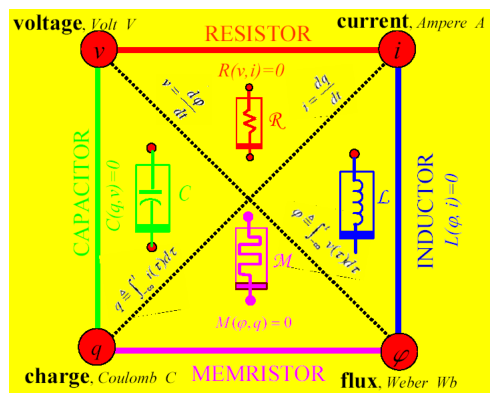
Hình 12. Bốn phần tử mạch cơ bản (Mainzer và Chua, 2013, tr. 289).
304 Trí tuệ Nhân tạo của Hệ thống Phỏng thần kinh trong mặt phẳng từ thông theo điện tích, có độ dốc, gọi là memristance (điện trở nhớ), thay đổi từ điểm này sang điểm khác (Chua, 2011).
Một bóng bán dẫn là một thiết bị ba cực với ba kết nối tới một mạch. Nó hoạt động như một công tắc hoặc một bộ khuếch đại, với một điện áp đặt vào một cực điều khiển dòng điện chạy giữa hai cực còn lại. Mặc dù một memristor hoạt động cục bộ chỉ có hai cực, nó cũng có thể hiện thực hóa các chức năng này. Ngược lại, các memristor thụ động cục bộ có thể được sử dụng để xây dựng cả bộ nhớ và logic kỹ thuật số mà không cần nguồn điện. Đây là lý do tại sao chúng được gọi là bộ nhớ bất khả biến. Nói một cách ẩn dụ, một memristor có sẵn ý thức về lịch sử. Một tín hiệu được áp dụng tại một thời điểm có thể ảnh hưởng đến một tín hiệu khác đi qua cùng một đường dẫn sau đó. Tín hiệu đầu tiên thực hiện sự điều khiển này bằng cách thiết lập trạng thái bên trong của memristor thành điện trở cao hoặc thấp.
Do đó, trong một máy tính phỏng thần kinh, các memristor thụ động cục bộ sẽ không hoàn toàn thay thế bóng bán dẫn, mà bổ sung cho chúng trong các chức năng bộ nhớ và mạch logic. Các memristor có thể đóng vai trò của các khớp thần kinh. Trong các mạng nơ-ron sinh học, mỗi tế bào thần kinh giao tiếp với các tế bào khác thông qua hàng nghìn khớp thần kinh. Một cơ chế học tập quan trọng được thực hiện bằng cách điều chỉnh cường độ của các kết nối khớp thần kinh. Trong một mạng nơ-ron nhân tạo, các khớp thần kinh phải là những cấu trúc nhỏ nhưng hiệu quả. Các memristor thụ động cục bộ đáp ứng tất cả các yêu cầu cần thiết. Chúng thay đổi điện trở để đáp ứng với các dòng điện chạy qua chúng. Hoạt động này gợi ý một cách trực tiếp để mô hình hóa sự điều chỉnh cường độ khớp thần kinh.
Hãy nhớ lại rằng có hai loại memristor khác biệt về mặt chất: memristor thụ động cục bộ và memristor hoạt động cục bộ. Memristor HP là thụ động cục bộ vì nó không cần nguồn điện và được gọi là bất khả biến. Các kênh ion kali và natri trong mô hình mạch màng thần kinh Hodgkin–Huxley cổ điển có thể được coi là các memristor hoạt động cục bộ, được cấp nguồn bởi bơm natri và bơm kali với năng lượng lấy từ các phân tử ATP. Ngược lại, các khớp thần kinh là các memristor thụ động cục bộ có khả năng duy trì hiệu quả khớp thần kinh của chúng trong thời gian dài mà không tiêu tốn bất kỳ năng lượng nào.
Cơ sở Thần kinh sinh học và Nhận thức của Hệ thống Phỏng thần kinh 305
Vì não bộ của chúng ta xử lý thông tin chỉ bằng cách sử dụng các khớp thần kinh và sợi trục, nên suy ra rằng các mạch được tạo thành từ cả hai loại memristor cũng có thể mô phỏng các chức năng não bộ cao hơn. Hiện tượng tăng cường dài hạn (LTP) gắn liền với trí nhớ dài hạn cũng có thể được mô phỏng bằng một memristor. Nhiều hiện tượng trí nhớ liên kết, chẳng hạn như hành vi chó Pavlov, có thể được mô phỏng bằng một mạch memristor. Nếu não bộ được tạo thành từ các memristor, thì chúng ta có thể kỳ vọng rằng các mạch điện tử được tạo thành từ cả memristor thụ động cục bộ và memristor hoạt động cục bộ một ngày nào đó có thể mô phỏng tâm trí con người (Mullins, 2009). Chìa khóa cho quá trình cơ bản này là khám phá xem hoạt động cục bộ có thể dẫn đến sự nổi lên của các mẫu phức tạp từ một khối mô não đồng nhất như thế nào. Về mặt hình thức, nguyên lý hoạt động cục bộ được hiện thực hóa trong bất kỳ ô tô-mát tế bào nào. Trong các nơ-ron và memristor, nguyên lý hoạt động cục bộ không chỉ là một mô hình hình thức mà còn là một thực tế sinh học và kỹ thuật.
Mô hình Mạch Điện Hodgkin–Huxley
Mô hình mạch điện Hodgkin–Huxley của màng sợi trục khổng lồ mực ống và các phương trình Hodgkin–Huxley liên kết của nó (còn gọi là phương trình HH) đã đứng vững trước thử thách của thời gian và đóng vai trò là tài liệu tham khảo kinh điển trong nghiên cứu sinh lý học thần kinh và khoa học não bộ suốt 70 năm qua. Mực ống được Hodgkin và Huxley lựa chọn vì chúng được trời phú cho những sợi trục khổng lồ, lớn nhất trong số đó ở một con mực Đại Tây Dương lớn (Loligo pealeii) có đường kính lên tới 1 mm, như minh họa trong Hình 13 (Young, 1936; Hodgkin và Keynes, 1956).
Trong mô hình mạch điện Hodgkin–Huxley, I, INa, IK và Il lần lượt biểu thị dòng điện màng sợi trục bên ngoài, dòng ion natri, dòng ion kali và dòng rò. Tương tự, E, ENa, EK và El lần lượt biểu thị điện áp tụ điện màng, điện áp pin ion natri, điện áp pin ion kali và điện áp pin rò. Giả định cơ bản mà Hodgkin và Huxley đưa ra là sợi trục khổng lồ của mực ống được thể hiện sơ đồ trong Hình 13(a) có thể được mô hình hóa bằng một mạch phân bố gồm một đường dây các thiết bị điện hai cực giống hệt nhau (còn gọi là các tế bào HH) được mô tả bởi mô hình mạch HH trong Hình 14,
306 Trí tuệ Nhân tạo của Hệ thống Phỏng thần kinh
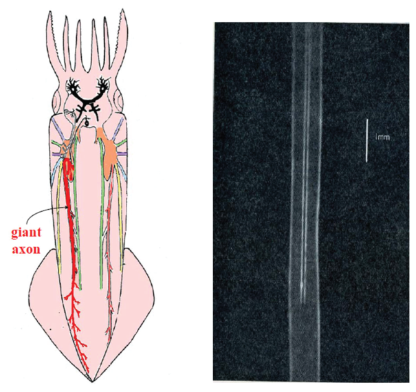
(a) (b)
Hình 13. (a) Sơ đồ hệ thống sợi khổng lồ của mực Bắc Đại Tây Dương Loligo pealeii. Tái bản từ (Young, 1936) với một vài chỉnh sửa nhỏ; (b) sợi trục khổng lồ đã làm sạch của Loligo, với một ống thủy tinh đường kính 0,1 mm bên trong nó (Mainzer và Chua, 2013, tr. 291).
và được ghép cặp bằng các điện trở thụ động giống hệt nhau, như thể hiện trong Hình 15(b). Bằng cách giả sử các tế bào HH nhỏ về mặt vật lý và lấy giới hạn khi độ dài Δx → 0, các sự ghép cặp tiêu tán tiến tới một toán tử Laplace, qua đó mô hình hóa cơ chế khuếch tán tiêu chuẩn. Các phương trình mô tả toàn bộ hệ thống trong Hình 15(b) sau đó tiến tới một hệ các phương trình phản ứng–khuếch tán theo một biến không gian.
Mô hình mạch HH được thể hiện trong Hình 14 (Hodgkin và Huxley, 1952) chứa bảy phần tử mạch phải được đặc tả trước khi có thể lập công thức các phương trình chi phối mạch. Các phần tử này và giá trị tham số của chúng phải được xác định bằng các thí nghiệm tỉ mỉ. Để thuận tiện trong các thiết lập đo lường của mình, Hodgkin và Huxley đã chọn đo tất cả các điện áp đối
Cơ sở Thần kinh sinh học và Nhận thức của Hệ thống Phỏng thần kinh 307
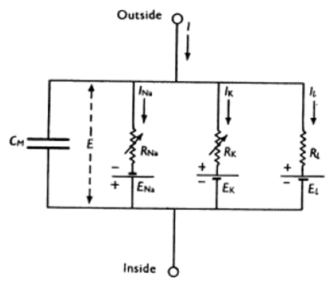
Hình 14. Một mạch điện biểu diễn màng tế bào. RNa = 1/gNa, RK = 1/gK, Rl = 1/¯gl · RNa và RK thay đổi theo thời gian và điện thế màng. Các thành phần khác là hằng số (Mainzer và Chua, 2013, tr. 291).
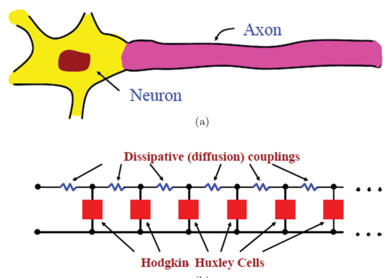
(a)
(b)
Hình 15. (a) Sơ đồ nguyên lý của một nơ-ron và sợi trục của nó; (b) một mô hình sợi trục một chiều được tạo thành từ các tế bào HH ghép cặp bằng điện trở (Mainzer và Chua, 2013, tr. 292).
308 Trí tuệ Nhân tạo của Hệ thống Phỏng thần kinh với điện thế nghỉ Er, mà giá trị của nó phụ thuộc vào mẫu sợi trục và nhiệt độ đo.
Cụ thể, Hodgkin và Huxley đã đưa ra các biến điện áp dịch chuyển theo Er là V = E − Er, VNa = ENa − Er, VK = EK − Er, Vl = El − Er. Theo các biến điện áp dịch chuyển theo Er này, các phương trình HH hoàn chỉnh và các giá trị tham số liên kết được cho dưới dạng sau:
dV dt + ¯gKn4(V −VK) + ¯gNam3h(V −VNa) + ¯gl(V −Vl),
I = CM
trong đó
dn exp V + 10 dt = αn(1 −n) −βnn, với αn = 0.01(V + 10)
10 −1 và βn = 0.125 exp(V/80),
dm exp V + 25 dt = αm(1 −m) −βmm, với αm = 0.1(V + 25)
10 −1 và βm = 4 exp(V/18), dh dt = αh(1 −h) −βhh, với αh = 0.07 exp(V/20)
exp V + 30 và βh = 1
10 + 1
.
Các tham số là CM = 1.0 μF/cm2, VNa = −115 mV, VK = 12 mV, Vl = −10.613 mV, ¯gNa = 120 mS/cm2, ¯gK = 36 mS/cm2, ¯gl = 0.3 mS/cm2.
Vế phải của phương trình HH bao gồm tổng của bốn số hạng, cụ thể là, ICM, IK, INa và Il, trong đó ICM và Il lần lượt biểu thị dòng điện chạy xuống tụ điện màng sợi trục CM và điện trở Rl. Hai dòng điện còn lại IK và INa được thể hiện đang chạy xuống hai phần tử mạch được biểu diễn bằng ký hiệu điện trở có mũi tên và được Hodgkin và Huxley gọi là các điện trở biến thiên theo thời gian vì chúng đại diện cho hai điện trở RK và RNa tương ứng không phải là hằng số mà thay đổi theo thời gian. Lưu ý rằng chú thích trong Hình 14 định nghĩa RK = 1/gK và RNa = 1/gNa
Cơ sở Thần kinh sinh học và Nhận thức của Hệ thống Phỏng thần kinh 309
trong đó gK và gNa được Hodgkin và Huxley gọi là các độ dẫn điện biến thiên theo thời gian.
Tuy nhiên, các thuật ngữ “điện trở biến thiên theo thời gian” và “độ dẫn điện biến thiên theo thời gian” do Hodgkin và Huxley lựa chọn là không theo quy ước theo nghĩa RK và RNa trong mô hình mạch HH không thể được quy định như một hàm của thời gian, như thường được giả định trong lý thuyết mạch cơ bản. Thay vào đó, sự biến thiên theo thời gian của RK và RNa (tương ứng là gK và gNa) trong mô hình mạch HH lần lượt phụ thuộc vào điện áp VRK = V − VK qua RK và điện áp VRNa = V − VNa qua RNa.
Hơn nữa, khi cho trước VRK hoặc VNa, sự biến thiên theo thời gian của RK và RNa chỉ có thể được xác định bằng cách giải một hoặc nhiều phương trình vi phân, như được quy định cho RK và RNa tương ứng. Nhưng các điện trở biến thiên theo thời gian RK và RNa (tương ứng là độ dẫn điện biến thiên theo thời gian gK và gNa) được Hodgkin và Huxley xác định trong Hình 14 về cơ bản là sai xét từ góc độ lý thuyết mạch và khoa học. Cụ thể, hai phần tử RK và RNa (tương ứng là gK và gNa) trong mô hình mạch sợi trục HH ở Hình 14 thuộc về lớp hoàn toàn khác là các phần tử mạch bất biến theo thời gian của memristor. Sau khi lỗi nhận dạng sai của Hodgkin–Huxley được sửa chữa, tất cả các sự bất thường và nhầm lẫn (Cole, 1972; Mauro, 1961) liên quan đến điện cảm bất thường, sự chỉnh lưu, các tham số phụ thuộc tần số và các cơ chế cơ bản chịu trách nhiệm tạo ra các điện thế hoạt động đều có thể được giải quyết rõ ràng một cách đơn giản và chặt chẽ.
Định nghĩa Toán học về Memristor
Memristor là bất kỳ thiết bị điện hai cực nào (được mô tả như một hộp đen trong Hình 16(a)) có dòng điện cực tức thời i(t) và điện áp v(t) tuân theo định luật Ohm v = Ri với R = R(x1, x2, . . . , xn), trong đó hệ số tỷ lệ R không phải là một hằng số, mà là một hàm liên tục của n biến trạng thái x = (x1, x2, . . . , xn) tiến hóa theo một hệ n phương trình vi phân tự trị:
310 Trí tuệ Nhân tạo của Hệ thống Phỏng thần kinh
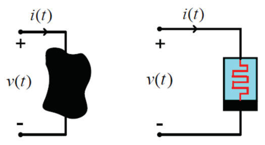
(b) (a)
Hình 16. (a) Thiết bị điện hai cực; (b) ký hiệu của memristor. Dải màu đen dày rất cần thiết để phân biệt cực tham chiếu dương phía trên với cực tham chiếu âm (Mainzer và Chua, 2013, tr. 294).
các phương trình:
˙x1 = f1(x1, x2, . . . , xn; i),
˙x2 = f2(x1, x2, . . . , xn; i),
... hoặc viết ngắn gọn, ˙x = f(x, i),
˙xn = fn(x1, x2, . . . , xn; i).
Các biến trạng thái được giả định là độc lập với bất kỳ biến điện nào bên ngoài thiết bị và không cần có bất kỳ diễn giải vật lý nào, mặc dù chúng chi phối động lực học bên trong (ví dụ: động học) của thiết bị. Ngoài ra, giả định rằng R là một hàm liên tục của x = (x1, x2, . . . , xn), và fk, k = 1, 2, . . . , n là các hàm khả vi của (x, i). Số lượng n các biến trạng thái phụ thuộc vào cơ chế hoạt động bên trong của thiết bị và là thước đo bậc phức tạp của động lực học memristor. Do đó, một memristor bậc hai (n = 2) nhìn chung có thể thể hiện các hiện tượng động lực học phức tạp hơn so với một memristor bậc nhất (n = 1). Ký hiệu của memristor được thể hiện trong Hình 16(b). Từ phương trình memristor suy ra R = R(x) có cùng đơn vị vật lý với điện trở, tức là Ohm (Ω). Do đó, thật hợp lý khi R(x) được gọi là memristance (điện trở nhớ) tại trạng thái x = (x1, x2, . . . , xn) (Chua et al., 2012a).
Cơ sở Thần kinh sinh học và Nhận thức của Hệ thống Phỏng thần kinh 311
Đôi khi, sẽ thuận tiện hơn nếu điện áp v được chọn làm biến đầu vào với dạng nghịch đảo của phương trình memristor i = Gv với G = G(x1, x2, . . . , xn), trong đó một lần nữa, hệ số tỷ lệ G không phải là một hằng số, mà là một hàm liên tục của n biến trạng thái x = (x1, x2, . . . , xn), tiến hóa theo một hệ n phương trình vi phân tự trị:
˙x1 = f1(x1, x2, . . . , xn; v),
˙x2 = f2(x1, x2, . . . , xn; v),
... hoặc viết ngắn gọn, ˙x = f(x, v),
˙xn = fn(x1, x2, . . . , xn; v).
Hàm liên tục G = G(x) được gọi là memductance (độ dẫn nhớ) và có đơn vị vật lý là Siemens (S).
Quỹ tích i theo v tương ứng với bất kỳ dạng sóng memristor tuần hoàn nào (v(t), i(t)) đều phải đi qua gốc tọa độ với giả sử rằng v(t), hoặc i(t), nhận cả giá trị dương và giá trị âm. Hơn nữa, nếu R(x) > 0 và G(x) > 0, thì quỹ tích i theo v không thể cắt trục i, hoặc trục v, ngoại trừ tại gốc tọa độ. Vòng trễ thắt nút (pinched hysteresis loop) là dấu vân tay của một memristor và có thể được chứng minh dễ dàng chỉ bằng cách đặt một tín hiệu điện áp (tương ứng là dòng điện) tuần hoàn lưỡng cực (tức là dạng sóng nhận cả giá trị dương và âm) và ghi lại đáp ứng dòng điện (tương ứng là điện áp) tương ứng. Một ví dụ về vòng trễ thắt nút memristor đối xứng được thể hiện trong Hình 17.
Memristor Kênh Ion Kali
Phần tử mạch thứ hai (từ phải sang) trong mô hình mạch sợi trục Hodgkin–Huxley (Hình 14) là một độ dẫn điện biến thiên theo thời gian GK liên kết với dòng chảy của dòng ion kali IK. Hãy ký hiệu điện áp qua phần tử này là vK và dòng điện đi vào cực dương là iK, như thể hiện trong Hình 18.
Số hạng thứ hai trong phương trình HH có thể được viết lại thành iK = GK(x1)vK và GK(x1) ≜ ¯gKx4
1 với các ký hiệu được thay đổi: vK thay cho
312 Trí tuệ Nhân tạo của Hệ thống Phỏng thần kinh
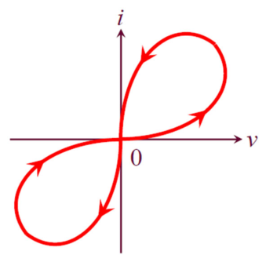
Hình 17. Ví dụ về vòng trễ thắt nút của memristor (Mainzer và Chua, 2013, tr. 295).
VRK = V − VK, EK thay cho VK, và x1 thay cho n. Theo các ký hiệu mới này, ta thu được dx1 dt = αn(1 − x1) − βnx1
⎛
⎞
⎝0.01((vK + EK) + 10
⎠(1 −x1)
10
= (vK+EK)+10
−1 exp
(vK + EK)
−0.125 exp x1
80
≜ fn(x1, vK), trong đó EK = 12 mV.
Rõ ràng, chỉ có một (n = 1) biến trạng thái x1, đó là ký hiệu tổng quát cho biến kích hoạt cổng kali không thứ nguyên “n” trong các phương trình HH lịch sử. Tương tự, lưu ý rằng phương trình cuối cùng là một trường hợp đặc biệt của phương trình trạng thái của một memristor cho một biến trạng thái. Nói cách khác, các phương trình được viết lại cuối cùng định nghĩa một memristor bậc nhất. Do đó, ký hiệu gây hiểu lầm cho kênh ion kali trong mô hình mạch HH nên được thay thế bằng memristor kênh ion kali được mô tả trong Hình 18. Memristor kênh ion kali được đặc tả hoàn toàn bởi GK(n) và fn(n, vK). Chúng ta sẽ gọi GK(n) là hàm độ dẫn nhớ kali.
Cơ sở Thần kinh sinh học và Nhận thức của Hệ thống Phỏng thần kinh 313
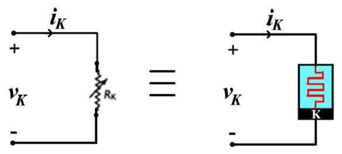
Hình 18. Độ dẫn điện biến thiên theo thời gian GK trích xuất từ mô hình mạch HH (Hình 14) là một memristor bậc nhất (Mainzer và Chua, 2013, tr. 296).
fn(n, vK) được gọi là hàm động học kích hoạt cổng kali hoặc đơn giản là hàm kích hoạt K.
Memristor Kênh Ion Natri
Phần tử mạch thứ ba (từ phải sang) trong mô hình mạch sợi trục Hodgkin–Huxley (Hình 14) là một độ dẫn điện biến thiên theo thời gian GNa liên kết với dòng chảy của dòng ion natri INa. Hãy ký hiệu điện áp qua phần tử này là vNa và dòng điện đi vào cực dương là iNa, như thể hiện trong Hình 19.
Số hạng thứ hai trong phương trình HH có thể được viết lại thành iNa = GNa(x1, x2)vNa và GNa(x1, x2) ≜ ¯gNax3
1x2 với các ký hiệu được thay đổi: vNa thay cho VRNa = V − VNa, −ENa thay cho VNa, x1 thay cho m, và x2 thay cho h. Theo các ký hiệu mới này, ta thu được dx1 dt = αm(1 − x1) − βmx1
⎛
⎞
⎝0.1((vNa −ENa) + 25
⎠(1 −x1)
10
= (vNa−ENa)+25
−1 exp
(vNa −ENa)
−4 exp x1
18
≜ fm(x1, vNa) và
314 Trí tuệ Nhân tạo của Hệ thống Phỏng thần kinh dx2 dt = αh(1 − x2) − βhx2
0.07 exp (vNa −ENa)
(1 −x2)
=
20
⎛
⎞
⎝ 1
⎠x2
10
− (vNa−ENa)+30 exp
+ 1
≜ fh(x2, vNa), trong đó ENa = 115 mV.
Rõ ràng, chỉ có hai (n = 2) biến trạng thái x1 và x2, lần lượt là các ký hiệu tổng quát cho biến kích hoạt cổng natri không thứ nguyên “m” và biến bất hoạt cổng natri “h” trong các phương trình HH lịch sử. Tương tự, lưu ý rằng phương trình cuối cùng là một trường hợp đặc biệt của phương trình trạng thái của một memristor cho hai biến trạng thái. Nói cách khác, các phương trình được viết lại cuối cùng định nghĩa một memristor bậc hai. Do đó, ký hiệu gây hiểu lầm cho kênh ion natri trong mô hình mạch HH nên được thay thế bằng memristor kênh ion natri được mô tả trong Hình 19. Memristor kênh ion natri được đặc tả hoàn toàn bởi GNa(m, h), fm(m, vNa), và fh(h, vNa). Chúng ta sẽ gọi GNa(m, h) là hàm độ dẫn nhớ natri. fm(m, vNa) được gọi là hàm động học kích hoạt cổng natri hoặc đơn giản là hàm kích hoạt Na.
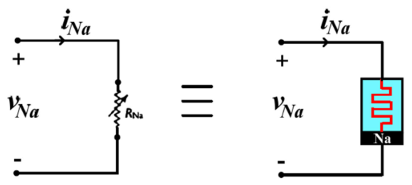
Hình 19. Độ dẫn điện biến thiên theo thời gian RNa trích xuất từ mô hình mạch HH (Hình 15) là một memristor bậc hai (Mainzer và Chua, 2013, tr. 297).
Cơ sở Thần kinh sinh học và Nhận thức của Hệ thống Phỏng thần kinh 315
Tương tự, fh(h, vNa) được gọi là hàm động học bất hoạt cổng natri hoặc đơn giản là hàm bất hoạt Na.
Cũng giống như trong lý thuyết mạch điện tử, có thể phân tích và dự đoán đáp ứng của một memristor đối với một tín hiệu đầu vào hình sin biên độ nhỏ được đặt vào như một nhiễu loạn nhỏ quanh một điểm cân bằng Q gọi là điểm làm việc một chiều (DC). Phương pháp phân tích này rất mạnh mẽ vì chúng ta có thể áp dụng nhiều phương pháp phân tích mạch tuyến tính, bao gồm phép biến đổi Laplace, giúp tránh phải giải bất kỳ phương trình vi phân nào. Mạch tương đương tín hiệu nhỏ có thể được suy ra quanh bất kỳ điểm cân bằng Q nào của memristor kênh ion kali và memristor kênh ion natri. Trong cả hai trường hợp, các công thức tường minh cho tất cả các phần tử mạch đều có thể được cung cấp trong mỗi mạch tương đương tín hiệu nhỏ (Chua et al., 2012a).
Mô hình Mạch Sợi trục Hodgkin–Huxley Memristor
Thay thế điện trở kali biến thiên theo thời gian RK và điện trở natri RNa của Hodgkin–Huxley trong Hình 14 bằng memristor kênh ion kali trong Hình 18 và memristor kênh ion natri trong Hình 19 tương ứng, chúng ta thu được mô hình mạch sợi trục Hodgkin–Huxley memristor như thể hiện trong Hình 20(a). Lưu ý rằng mô hình mạch này chỉ chứa các phần tử mạch bất biến theo thời gian được định nghĩa rõ ràng, đúng như mong đợi đối với bất kỳ mô hình vật lý thực tế nào của sợi trục.
Với lý thuyết mạch cơ bản, mô hình mạch DC Hodgkin–Huxley trong Hình 20(b) có thể được suy ra đơn giản bằng cách xóa tụ điện màng sợi trục CM vì IM = CM dVM dt = 0 tại DC. Đối với mỗi V = Vm = Vm(Q) tại một điểm cân bằng Q(Vm, Im), trong đó V = Vm và I = Im lần lượt biểu thị điện áp màng sợi trục và dòng điện màng trong Hình 20(a), chúng ta có thể thay thế memristor kênh ion kali bằng mô hình mạch tín hiệu nhỏ của nó quanh điểm cân bằng DC tương ứng tại VK = Vm(Q) − EK = Vm(Q) − 12mV ≜ VK(QK). Tương tự, chúng ta có thể thay thế memristor kênh ion natri bằng mô hình mạch tín hiệu nhỏ của nó, quanh điểm cân bằng DC tương ứng tại VNa = Vm(Q) + EK = Vm(Q) + 115 mV ≜ VNa(QNa). Mô hình mạch tín hiệu nhỏ Hodgkin–Huxley thu được
316 Trí tuệ Nhân tạo của Hệ thống Phỏng thần kinh
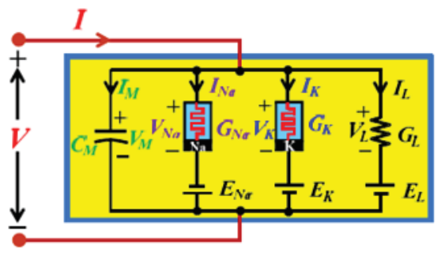
(a)
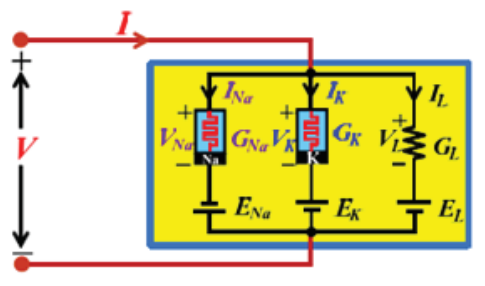
(b)
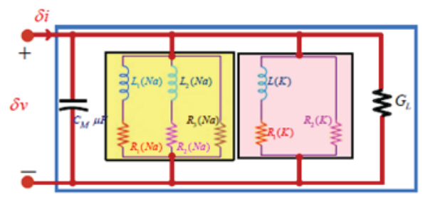
(c)
Hình 20. (a) Mô hình mạch sợi trục HH memristor; (b) mô hình mạch sợi trục HH memristor DC; (c) mô hình mạch sợi trục HH tín hiệu nhỏ (Mainzer và Chua, 2013, tr. 299).
Cơ sở Thần kinh sinh học và Nhận thức của Hệ thống Phỏng thần kinh 317
tại điểm cân bằng Q(Vm, Im) được thể hiện trong Hình 20(c).
Bằng cách nhận ra rằng hai phần tử mạch RK và RNa trong mô hình mạch sợi trục Hodgkin–Huxley ở Hình 14 không phải là biến thiên theo thời gian mà là các memristor bất biến theo thời gian, chúng tôi đã có thể cung cấp một nền tảng lý thuyết mạch vững chắc để phân tích, diễn giải và giải thích các hiện tượng bất thường và nghịch lý khác nhau được báo cáo trong tài liệu hơn 70 năm trước và vẫn chưa được giải quyết (Mauro, 1961). Chẳng hạn, cả Cole (1941) và Hodgkin (Hodgkin et al., 1949) đều khá sốc khi phát hiện ra rằng trở kháng tín hiệu nhỏ mà họ đo được từ màng sợi trục của mực ống thể hiện một điện kháng dương, gợi ý sự hiện diện của một độ tự cảm khổng lồ và một từ trường cực lớn trong sợi trục mực ống. Hiện tượng khó giải thích này từ đó được gọi trong tài liệu là trở kháng bất thường (Mauro, 1961). Nhưng các số hạng trong phương trình HH liên quan đến độ dẫn điện kali biến thiên theo thời gian GK trên thực tế cấu thành một memristor bậc nhất. Tương tự, các số hạng liên quan đến độ dẫn điện natri biến thiên theo thời gian GNa trên thực tế cấu thành một memristor bậc hai. Do đó, mô hình mạch sợi trục Hodgkin–Huxley trong Hình 14 từ nay nên được thay thế bằng mô hình mạch sợi trục Hodgkin–Huxley memristor thể hiện trong Hình 20(a).
Vì hai memristor trong mô hình mạch sợi trục Hodgkin–Huxley là các phần tử mạch phi tuyến bất biến theo thời gian, chúng ta có thể khám phá tiềm năng động lực học phi tuyến của hai phần tử mạch này. Các khái niệm lý thuyết mạch kinh điển như dẫn nạp tín hiệu nhỏ, trở kháng tín hiệu nhỏ và giản đồ cực-không đều có thể được áp dụng. Tất cả các đặc trưng mạch tuyến tính nội tại này và các công thức giải tích tường minh của chúng đều có thể được suy ra từ mô hình mạch sợi trục Hodgkin–Huxley memristor. Các đặc tính lý thuyết mạch đại diện cho các đặc trưng dứt khoát của mô hình mạch sợi trục Hodgkin–Huxley. Chúng đóng vai trò nền tảng trong nghiên cứu động lực học của các kênh ion. Chẳng hạn, các memristor kênh ion kali và natri thể hiện dấu vân tay đặc trưng của các vòng trễ thắt nút được mô tả trong Hình 17.
318 Trí tuệ Nhân tạo của Hệ thống Phỏng thần kinh
Hoạt động Cục bộ và sự Nổi lên của Điện thế Hoạt động
Một trong những điều kỳ diệu của phương trình HH là khả năng tạo ra một điện thế hoạt động (các xung nhọn) để đáp ứng với một kích thích dòng điện bên ngoài mô phỏng kích thích dòng điện khớp thần kinh ròng. Mặc dù các xung nhọn được tạo ra một cách nhất quán về mặt số học, không ai biết nguồn gốc vật lý và toán học của điện thế hoạt động (các xung nhọn). Hoạt động cục bộ có thể được chứng minh là nguồn gốc của các xung nhọn. Cụ thể, các nơ-ron có thể được chứng minh là nằm cân bằng gần một tập hợp con nhỏ bé của miền hoạt động cục bộ, mà chúng tôi gọi là rìa hỗn loạn (edge of chaos). Miền rìa hỗn loạn được xác định bằng cách suy ra hàm phức tạp vô hướng tường minh Z(s, Iext) gọi là hàm trở kháng của mô hình mạch memristor Hodgkin–Huxley tín hiệu nhỏ.
Định lý chính (Chua et al., 2012) khẳng định rằng các điểm không của hàm vô hướng Y(s, Vm) ≜ 1/Z(s, Vm), được gọi là dẫn nạp tín hiệu nhỏ của mô hình mạch memristor Hodgkin–Huxley, đồng nhất với các giá trị riêng của ma trận Jacobi 4 × 4 của phương trình HH, được tính tại điểm cân bằng Vm = V(Iext) của các phương trình HH, đối với mỗi dòng điện kích thích DC không đổi Iext. Ở đây, s = σ + iω biểu thị biến phức liên kết với phép biến đổi Laplace ˆv(s) của một hàm thời gian v(t) (Chua et al., 2012b) và Iext biểu thị một nguồn dòng điện bên ngoài đặt vào mô hình mạch sợi trục Hodgkin–Huxley thể hiện trong Hình 20(a). Định lý này không chỉ đúng cho phương trình HH bốn chiều mà còn cho bất kỳ hệ n phương trình vi phân nào. Đây là một công cụ mạnh mẽ vì thay vì tính toán các giá trị riêng của một ma trận n × n chiều cao, người ta chỉ cần tính toán các nghiệm (điểm không) của một phương trình đa thức vô hướng của một biến duy nhất s cho bất kỳ số nguyên n nào.
Hầu hết các hiểu biết sâu sắc liên quan đến hoạt động cục bộ và rìa hỗn loạn có thể được khám phá từ việc phân tích các phương trình vi phân tuyến tính hóa quanh các điểm cân bằng của hệ động lực phi tuyến liên kết của nó. Do đó, chúng ta sẽ suy ra mối quan hệ giữa điện thế nghỉ (điện áp cân bằng) Vm như một hàm của dòng điện kích thích bên ngoài không đổi (DC) Iext đặt qua hai cực ngoài của mô hình Hodgkin–Huxley memristor trong Hình 20(a), như
Cơ sở Thần kinh sinh học và Nhận thức của Hệ thống Phỏng thần kinh 319
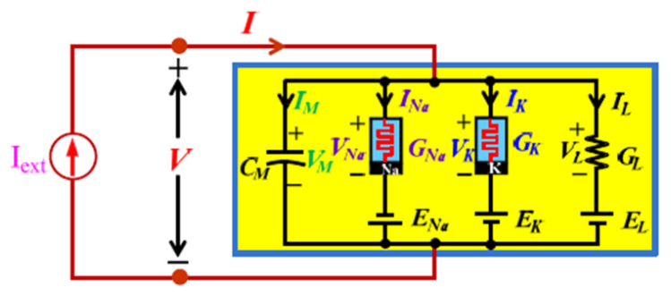
Hình 21. Sợi trục Hodgkin–Huxley được kích thích bởi nguồn dòng bên ngoài Iext (Mainzer và Chua, 2013, tr. 301).
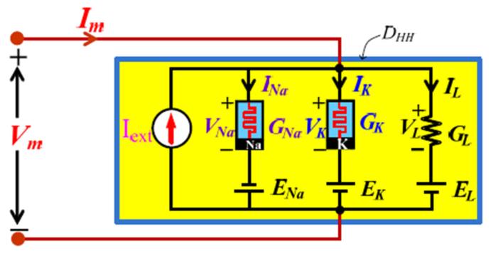
Hình 22. Mô hình mạch DC Hodgkin–Huxley mắc song song với nguồn dòng bên ngoài Iext (Mainzer và Chua, 2013, tr. 301).
thể hiện trong Hình 21. Vì ICM = CMdVCM/dt ở trạng thái nghỉ, chúng ta có thể xóa tụ điện CM khỏi Hình 21 và gắn một cặp cực ngoài mới, như mô tả trong mạch vẽ lại ở Hình 22, với IM biểu thị dòng điện màng bên ngoài và VM biểu thị điện áp màng với Vm = VNa − ENa = VK + EK = VL + EL.
320 Trí tuệ Nhân tạo của Hệ thống Phỏng thần kinh
Mô hình Mạch DC Hodgkin–Huxley
Trong lý thuyết điện, bất kỳ hộp nào chứa các phần tử mạch nơi một cặp dây được đưa ra ngoài để kết nối với các phần tử mạch khác được gọi là mạng một cửa. Để suy ra mối quan hệ giữa điện áp nghỉ Vm như một hàm của dòng điện kích thích DC Iext trong Hình 22, hãy suy ra đường cong Vm theo Im của mạng một cửa tổng hợp DHH cho mỗi giá trị của Iext và xác định tọa độ của Vm tại điểm mà đường cong Vm − Im cắt trục Im = 0 (trục hoành). Với mục đích này, sẽ rất thuận tiện khi định nghĩa ba mạng một cửa mới DNa, DK và DL, như mô tả trong Hình 23(b), bao gồm cả
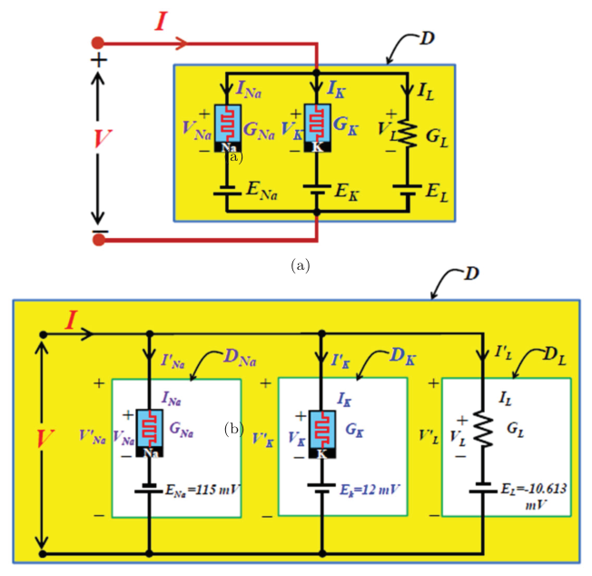
(a)
(a)
(b)
(b)
Hình 23. Mô hình mạch DC Hodgkin–Huxley trong (a) có thể được xem như ba mạng một cửa DNa, DK và DL (mô tả trong (b)) mắc song song (Mainzer và Chua, 2013, tr. 302).
Cơ sở Thần kinh sinh học và Nhận thức của Hệ thống Phỏng thần kinh 321
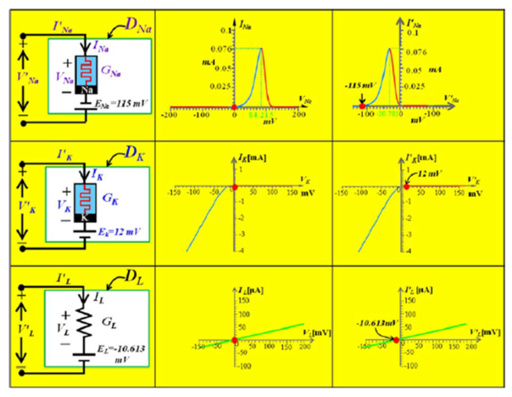
Hình 24. Minh họa đồ họa ảnh hưởng của pin trong đường cong điện áp–dòng điện DC của các mạng một cửa tổng hợp DNa, DK và DL (Mainzer và Chua, 2013, tr. 303).
pin như một phần của mạng một cửa. Hình 24 minh họa ảnh hưởng của pin trong đường cong điện áp–dòng điện DC của các mạng một cửa tổng hợp DNa, DK và DL. Đường cong DC Vm − Im trong Hình 25 là một tổ hợp của các đường cong VNa − INa, VK − IK và VL − IL trong Hình 24. Từ đường cong DC Vm − Im trong Hình 25 suy ra rằng đối với mỗi dòng điện kích thích DC Iext, phương trình HH có một điểm cân bằng duy nhất (Chua et al., 2012b).
Rìa hỗn loạn thường là một tập hợp con rất nhỏ của miền hoạt động cục bộ. Nhỏ bé nhưng lại sâu sắc đến mức chúng tôi thường kịch tính hóa tầm quan trọng của nó bằng cách gọi nó là viên ngọc của hoạt động cục bộ. Thật vậy, rìa hỗn loạn là cội nguồn của sự sống, và chúng ta sẽ thấy rằng các nơ-ron nằm cân bằng gần viên ngọc của hoạt động cục bộ này. Khá bí ẩn là trong khi mọi hiện tượng phức tạp, bao gồm cả việc tạo ra các xung nhọn, đều đòi hỏi
322 Trí tuệ Nhân tạo của Hệ thống Phỏng thần kinh
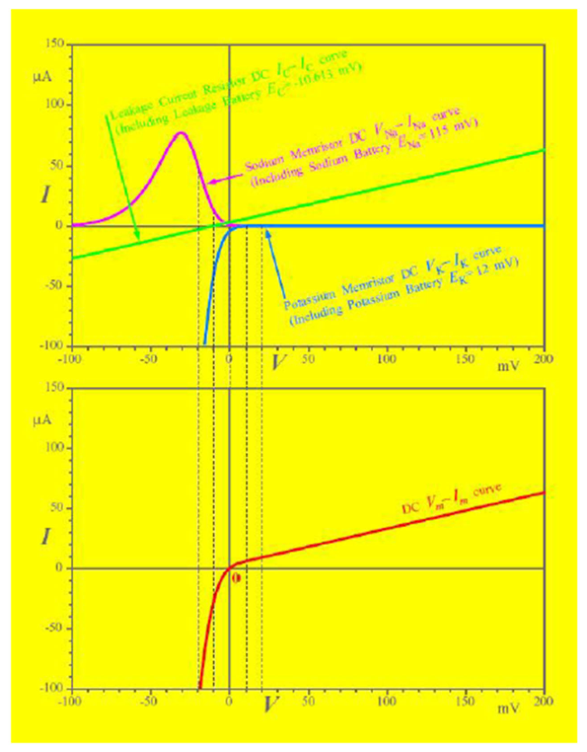
Hình 25. Đường cong DC Vm − Im màu đỏ là một tổ hợp của các đường cong VNa − INa, VK − IK và VL − IL tương ứng từ Hình 24 (Mainzer và Chua, 2013, tr. 304).
động lực học phi tuyến mạnh, nguồn gốc toán học của các hiện tượng toàn cục như vậy lại mang tính cục bộ một cách chặt chẽ. Lý thuyết về hoạt động cục bộ và rìa hỗn loạn hoàn toàn dựa trên các phương trình vi phân tuyến tính hóa quanh một điểm cân bằng. Việc kiểm tra một điểm cân bằng Q cho hoạt động cục bộ nói chung, hoặc rìa hỗn loạn nói riêng, liên quan đến việc khảo sát các phương trình HH tuyến tính hóa quanh Q.
Cơ sở Thần kinh sinh học và Nhận thức của Hệ thống Phỏng thần kinh 323
Các Phương trình Hodgkin–Huxley Tuyến tính hóa
Đối với mỗi điểm cân bằng Q tương ứng với một dòng điện kích thích DC Iext, hãy chồng một tín hiệu dòng điện nhỏ vô cùng nhỏ δi(t) và đặt tín hiệu tổng hợp Iext + δi(t) vào mô hình mạch sợi trục HH, như mô tả trong Hình 26(a). Việc một hệ thống (trong trường hợp này là sợi trục Hodgkin–Huxley) có hoạt động cục bộ tại Q hay không được quyết định hoàn toàn bởi đáp ứng δv(t) đối với một tín hiệu thử nghiệm hình sin nhỏ vô cùng nhỏ δi(t) = A sin ωt, trong đó A biểu thị
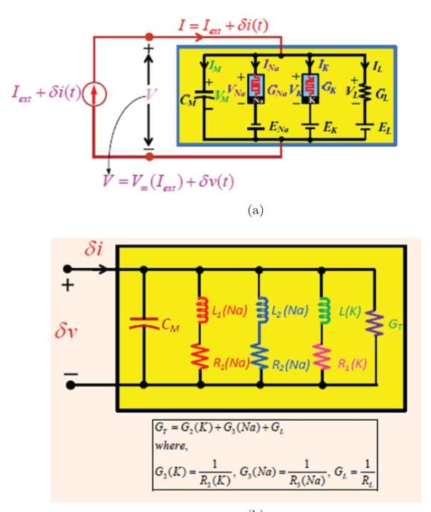
(a)
(b)
Hình 26. Mô hình mạch sợi trục Hodgkin–Huxley (a) và mạch Hodgkin–Huxley tương đương tín hiệu nhỏ tuyến tính hóa của nó (b) (Mainzer và Chua, 2013, tr. 305).
324 Trí tuệ Nhân tạo của Hệ thống Phỏng thần kinh biên độ và ω = 2πf biểu thị tần số góc. Từ lý thuyết mạch sơ cấp suy ra rằng đáp ứng δv(t) đối với bất kỳ kích thích dòng điện tín hiệu nhỏ nào δi(t) có thể được dự đoán bằng giải tích từ một mạch tương đương tín hiệu nhỏ có các phần tử được tính toán tường minh từ ma trận Jacobi của các phương trình vi phân phi tuyến liên kết, được tính tại điểm cân bằng Q. Một mạch tương đương như vậy được trình bày trong Hình 26(b).
Hàm Phức tạp của các Phương trình Hodgkin–Huxley
Nhìn chung, hàm phức tạp C(s) đối với một hệ thống một đầu vào một đầu ra được định nghĩa bởi tỷ số giữa phép biến đổi Laplace của biến đầu ra ˆy(t) và phép biến đổi Laplace ˆu(s) của biến đầu vào u(t), cụ thể là,
C(s) = L(y(t))
L(u(t)) = ˆy(s)
ˆu(s).
Trong Hình 26(a), u(t) = δi(t) và y(t) = δv(t), tương ứng. Việc kiểm tra hoạt động cục bộ và rìa hỗn loạn của một điểm cân bằng Q của mạch sợi trục HH mô tả trong Hình 26(a) tại bất kỳ I = Iext nào đòi hỏi chúng ta phải khảo sát hàm phức tạp được định nghĩa bởi
Z(s) = ˆv(s)
,
ˆi(s)
trong đó ˆv(s) = L(δv(t)) và ˆi(s) = L(δi(t)) lần lượt biểu thị phép biến đổi Laplace của δv(t) và δi(t). Hàm phức tạp Z(s) được gọi là hàm trở kháng trong lý thuyết mạch. Hàm trở kháng Z(s) cho mạch HH tương đương tín hiệu nhỏ trong Hình 26(b) đã được suy ra từ Chua et al. (2012b) và được tái hiện như sau:
Z(s, Vm) = a3s3 + a2s2 + a1s + a0 b4s4 + b3s3 + b2s2 + b1s + b0
.
Các công thức để tính bốn hệ số a0, a1, a2, a3 ở tử số và năm hệ số b0, b1, b2, b3, b4 ở mẫu số của Z(s) được liệt kê bởi Chua et al., 2012b.
Cơ sở Thần kinh sinh học và Nhận thức của Hệ thống Phỏng thần kinh 325
Theo các tiêu chí kiểm tra của hoạt động cục bộ và rìa hỗn loạn, chúng tôi trích xuất và diễn đạt lại chỉ những khía cạnh then chốt vốn thiết yếu cho một mô hình Hodgkin–Huxley:
Định lý hoạt động cục bộ: Không thể tạo ra một chuỗi xung nhọn trừ khi mạng một cửa Hodgkin–Huxley memristor trong Hình 26(a) hoạt động cục bộ tại một điểm cân bằng nào đó.
Định lý rìa hỗn loạn: Một điểm cân bằng ổn định tiệm cận cục bộ Q của phương trình HH nằm cân bằng trên rìa hỗn loạn khi và chỉ khi Re Z(iω, Vm(Q)) < 0 tại một tần số ω nào đó. Re Z biểu thị phần thực của số phức Z. Z(iω, Vm(Q)) là hàm trở kháng được tính tại s = 0 + iω.
Về mặt toán học, đôi khi thuận tiện hơn khi sử dụng cái gọi là hàm dẫn nạp Y(s) ≜ 1/Z(s) vì hàm trở kháng hội tụ về vô cùng tại các cực của nó trên trục ảo. Có thể chứng minh rằng phép kiểm tra rìa hỗn loạn là tương đương đối với các hàm trở kháng và dẫn nạp. Hơn nữa, nếu hàm trở kháng Z(s, Vm(Q)) của phương trình HH có một cực s = sp nằm trong nửa mặt phẳng phải mở, tức là Re sp > 0, thì mô hình sợi trục HH memristor hoạt động cục bộ tại Q. Nếu phương trình HH nằm cân bằng trên một rìa hỗn loạn tại một điểm cân bằng Q, thì nó hoạt động cục bộ tại Q. Những phát biểu này cung cấp các điều kiện đủ để một mô hình sợi trục Hodgkin–Huxley hoạt động cục bộ.
Tính ổn định cục bộ của điểm cân bằng Q của các phương trình HH được xác định bởi các giá trị riêng của ma trận Jacobi tương ứng. Do đó, hãy viết lại các phương trình HH, với kích thích dòng điện bên ngoài Iext, dưới dạng tổng quát sau:
dV dt = FV (V, n, m, h; Iext), dn dt = Fn(V, n, m, h; Iext), dm dt = Fm(V, n, m, h; Iext), dh dt = Fh(V, n, m, h; Iext).
326 Trí tuệ Nhân tạo của Hệ thống Phỏng thần kinh
Điện áp cân bằng duy nhất Vm(Iext) tại Q được ký hiệu là V = Vm(Q(Iext)) = Vm(Iext), có thể được tính từ phương trình cân bằng Im(Vm) = 0. Ma trận Jacobi liên kết JHH = (V, n, m, h, Iext) được ký hiệu là
⎡
⎤
∂FV
∂FV
∂FV
∂FV
∂V
∂n
∂m
∂m
⎢⎢⎢⎢⎢⎣
⎥⎥⎥⎥⎥⎦
∂Fn
∂Fn
∂Fn
∂Fn
∂V
∂n
∂m
∂m
JHH =
.
∂Fm
∂Fm
∂Fm
∂Fm
∂m ∂Fh
∂V
∂n
∂m
∂Fh
∂Fh
∂Fh
∂V
∂n
∂m
∂m
Tính ổn định cục bộ của điểm cân bằng Q của các phương trình HH đối với bất kỳ Iext nào được xác định bởi bốn giá trị riêng của ma trận Jacobi JHH = (V, n, m, h; Iext). Vì các công thức định nghĩa các hàm FV, Fn, Fm và FL khá phức tạp, nên 16 phần tử của ma trận Jacobi khá rắc rối và tốt nhất nên được lưu trữ dưới dạng mã máy tính. Bốn giá trị riêng của JHH = (V, n, m, h; Iext) phải được tính toán bằng số cho mỗi Iext. Nhưng định lý sau đây cho thấy rằng chính các giá trị này có thể được tính bằng cách giải tìm nghiệm của một phương trình đa thức, một nhiệm vụ tính toán đơn giản hơn nhiều.
Các giá trị riêng của ma trận Jacobi Hodgkin–Huxley JHH là các điểm không của hàm phức tạp tương ứng Y(s, Iext).
Bốn giá trị riêng của ma trận Jacobi JHH = (V, n, m, h; Iext) đồng nhất với bốn điểm không của đa thức tử số của hàm dẫn nạp vô hướng
Y(s, Vm) = b4s4 + b3s3 + b2s2 + b1s + b0
.
a3s3 + a2s2 + a1s + a0
Bốn điểm không zk = Re zk + i Im zk (k = 1, 2, 3, 4) của hàm dẫn nạp có thể được trực quan hóa như một quỹ tích trong mặt phẳng số phức có tọa độ Im zk và Re zk với Vm hoặc Iest làm tham số. Vì mỗi điểm không zk của hàm phức tạp bằng một giá trị riêng λk của ma trận Jacobi liên kết, quỹ tích của các điểm không cũng đại diện cho quỹ tích của các giá trị riêng. Hơn nữa, việc khảo sát các điểm không của hàm dẫn nạp tương đương với các cực của hàm trở kháng. Một khảo sát về các quỹ tích cho thấy rằng
Cơ sở Thần kinh sinh học và Nhận thức của Hệ thống Phỏng thần kinh 327
hàm trở kháng Z(s; Vm(Q)) của mô hình mạch sợi trục Hodgkin–Huxley memristor có một cặp cực nằm trong nửa mặt phẳng phải mở trên miền tham số:
−154.529 μA < Iest < −9.77003 μA,
−21.9425 mV < Vm < −5.34305 mV, còn được gọi là miền cực RHP HH. Theo đó, theo định lý đã đề cập ở trên, mô hình mạch sợi trục Hodgkin–Huxley memristor hoạt động cục bộ trong miền cực RHP HH.
Trang này được cố ý để trống Trang này được cố ý để trống Trang này được cố ý để trống Trang này được cố ý để trống